Jenis Tanaman Obat Lengkap (Dari A-Z) Beserta Gambar dan Khasiatnya
Tanaman obat keluarga atau disingkat TOGA adalah tanaman yang ditanam di pekarangan rumah dan bisa dimanfaatkan sebagai obat. Ribuan tahun yang lalu, telah ditemukan berbagai jenis tanaman yang digunakan sebagai bahan dalam meramu obat tradisional.
Jika pengobatan sudah Anda lakukan namun tidak berhasil, cobalah penyembuhan dengan pengobatan herbal dari tumbuh-tumbuhan yang ada di sekitar kita. Meski tahap penyembuhannya memerlukan kesabaran, namun khasiatnya sudah terbukti. Nah, kini Anda tidak perlu repot lagi jika ingin mencari obat untuk mengobati sakit, apalagi jika itu hanya luka ringan.
Yuk, kenali tanaman obat ini agar Anda tidak menyia-nyiakan manfaatnya. Berikut jenis-jenis tanaman obat lengkap beserta gambar, khasiat, kandungan, dan cara meramunya:
1. Adam Hawa (Tradescantia spathacea)
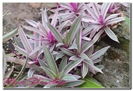Tanaman obat Adam Hawa atau dijuliki pula dengan nama nanas kerang. Tanaman ini memiliki daun yang tumbuh berpusar (roset) di permukaan tanah (mirip tanaman nanas, hanya saja yang ini tidak berbuah.
Khasiat: Menyembuhkan rematik, pendarahan, penyakit bronkhitis, batuk darah, disentri, sembelit, anemia, luka-luka, dan bengkak.
Kandungan: Carboxyrnethykellulose, dimethylsuffoxide, acetylaminotfluorene, dimethylsuffoxide, aqueous crude extract, zat 2-AAF dan banyak lagi senyawa lainnya yang bermanfaat untuk tubuh.
Cara membuat ramuan tanaman Adam Hawa:
Untuk luka luar: Tumbuklah daun adam hawa hingga halus kemudian oleskan pada bagian tubuh yang terdapat luka memar. Sifat antiinflamasi yang terdapat di dalamnya mampu mempercepat penyembuhan luka memar.
Rebus daun adam hawa yang telah dibersihkan dalam air bersih. Lalu minum air hasil rebusan tadi secara rutin hingga sembuh total.
2. Adas (Foeniculum vulgare Mill.)
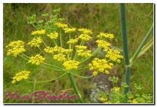Adas / fennel adalah salah satu komponen utama dalam pembuatan minyak telon. Selain dimanfaatlan sebagai bumbu masakan, adas juga memiliki banyak khasiat dalam mengobati beberapa macam penyakit. Tanaman ini menghasilkan bunga berwaran kuning yang muncul dari ujung batangnya.
Khasiat: mengurangi rasa nyeri pada saat menstruasi, memperlancar ASI, bahan campuran minyak telon untuk menjaga kehangatan tubuh bayi, dan meningkatkan cita rasa dalam masakan.
Kandungan: Fenkon, Anetol, minyak atsiri, stigmasterin (serposterin), bergapten, dan lain-lain.
Cara Membuat Ramuan Adas: Buah adas kering ditumbuk hingga halus, kemudian sedu dalam air panas. Anda bisa menambahkan madu agar rasanya tidak terlalu pahit. Minum 2 kali sehari saat pagi dan malam sebelum tidur secara rutin dan teratur.
3. Ajeran (Bidens pilosa L.)
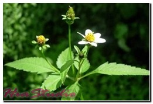Tanaman Ajeran atau ambong-ambong (Melayu), cinglancingan (Madura), ketul sapi / ketul kebo (Jawa), Hareuga (Sunda), rai raisu (Maluku), dan lain sebagainya. Tanaman ini memiliki daun yang bergerigi di pinggirnya dan menghasilkan bunga berwarna putih-kuning. Biasanya tumbuh liar di pinggir jalan sebagai tanaman semak.
Khasiat: Antiseptik, antipiretik (penurun panas), antiinflamasi, demam, gangguan pencernaan, salesma, wasir, usus buntu, dll.
Kandungan: Phytosterin-B, alkaloid poliina, zat pahit, saponin, zat samak, dan minyak atsiri.
Cara Membuat Ramuan Ajeran: Daun ajeran sebanyak 5 gram (segenggam), jahe secukupnya, dan daun sembung. Remus semua bahan dalam air mendidih. Saring lalu dinginkan. Minum hasil ramuan tersebut sebanyak 2 kali sehari.
4. Akar Wangi / Vetiver (Chrysopogon zizanioides)
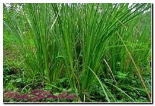Seperti namanya, tanaman akar wangi memiliki akar yang mengeluarkan aroma harum yang khas bahkan telah lama dijadikan sebagai bahan wangi-wangian oleh orang terdahulu. Selain sebagai bahan parfum, akar wangi juga memiliki banyak manfaat untuk kesehatan tubuh.
Khasiat: Atasi bau mulut, obat luka, mengatasi ketombe, obat demam, bengkak, batu ginjal, encok, menyembuhkan meriang, dll.
Kandungan: Vetiverol , minyak atsiri, asetat vetvenyl, dll.
Cara Membuat Ramuan Akar Wangi: Untuk pengobatan penyakit dalam, akar wangi dapat direbus dalam air lalu diminum secara teratur, sementara untuk pengobatan penyakit luar, bisa dengan dioleskan langsung pada bagian yang diinginkan setelah akar wangi dihaluskan.
5. Alang-alang (Imperata Cylindrica L. Raeusch)
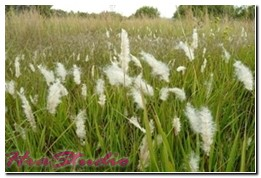Tanaman alang-alang biasanya tumbuh liar bahkan dianggap gulma oleh para petani di ladang. Meski demikian, alang-alang telah lama diketahui memiliki banyak khasiat sebagai obat tradisional.
Khasiat: Mengobati demam, menurunkan tekanan darah tinggi, sebagai piretik, diuretik (peluruh kencing), dll.
Kandungan: Asam oksalat, fernenol, katekolkampesterol, skopolotin, silindrin, stigmasterol, katekol, isoarborinol, dll.
Cara membuat ramuan tanaman obat Alang-Alang: Caranya sangat mudah cukup merebus akar alang-alang segar yang telah dibersihkan dalam air 2000ml hingga tersisa 1200ml, saring lalu minum airnya sebanyak 3 kali sehari.
6. Andong / Hanjuang (Cordyline fruticosa)
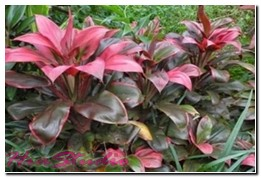Tanaman andong atau hanjuang tidak hanya digunakan sebagai tanaman hias pekarangan tetapi juga sebagai tanaman obat. Ciri khas dari tanaman ini adalah daunnya berwarna kemerahan terutama saat ditanam di area yang terkena sinar matahari langsung.
Khasiat: Mengobati disentri, radang gusi, wasir, batuk berdarah, memperlancar haid, dll.
Kandungan: Zat besi, timidine, flavonoid, tanin, saponin, kalsium oksalat, polifenol, steroida, polisakarida, antibakteri, antikoagulan, dan antiproliferatif (antikanker).
Cara membuat ramuan tanaman obat andong: Cuci bersih daun andong sebanyak 2-3 lembar. Rebuslah dalam 3 gelas air. Tunggu hingga tersisa setengahnya saja. Saring lalu minum airnya secara teratur.
7. Anggrung (Trema orientalis / Celtis orientalis)
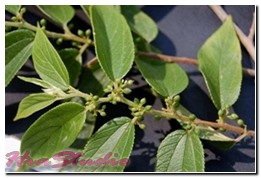Anggrung atau dikenal juga dengan nama dehong, mangkirai, kuray, dan lain sebagainya. Dalam sebuah studi baru-baru ini menunjukkan tanaman anggrung mampu mengurangi kadar gula darah.
Khasiat: Mengatasi batuk, diare, masuk angin, sakit tenggorokan, asma, bronkitis, gonore, demam kuning, sakit gigi, dan sebagai penangkal keracunan, kanker, mimisan, infeksi saluran kencing, dll.
Kandungan: Falvonoida, saponin, polifenol, dan lain sebagainya
Cara membuat ramuan tanaman obat anggrung: Cuci bersih daun anggur sekitar 8 gram. Rebus selama 20 menit dengan dua gelas air. Kemudian saring, tambahkan dengan madu (optional). Minumlah 2 kali sehari, saat pagi dan malam hari.
8. Tanaman Angsana (Pterocarpus indicus)
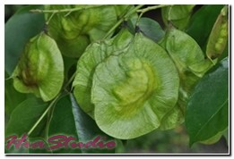Tanaman angsana tidak hanya terkenal sebagai pohon penghasil kayu berkualitas tetapi juga bagian tanamannya bisa digunakan sebagai obat untuk beberapa penyakit. Ciri khas tanaman ini adalah daunnya yang berbentuk bundar mirip telur.
Khasiat: Mengobati penyakit sariawan, batu ginjal, nefritis pada ginjal, diare, usus buntu, sembelit, bisul atau ambeien, diabetes mellitus, luka bakar, sebagai penawar racun, dll
Kandungan: Bunga angsana mengandung phytol esters dan lupeol. Batangnya mengandung arylbenzofuran, formononetin, isoliquiritigenin, dan hydroxyhydratropic acid.
Cara membuat ramuan tanaman obat angsana: Siapkan kulit kayu angsana sebanyak 3 gram. Seduh bersama dengan daun kumis kucing. Bisa diseduh, bisa juga dibuat infus. Minum airnya sekali sehari.
9. Anting-anting (Acalypha australis L.)
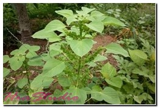Tanaman anting-anting telah sejak lama diketahui mampu mengatasi beberapa macam penyakit. Ciri khas dari tanaman ini adalah letak daunnya yang berseling, tepi bergerigi, dan berbentuk lonjong sampai lanset.
Khasiat: Mengobati dermatitis, eksim, luka koreng, disentri amoeba, diare, batuk, mimisan atau berak berdarah, dan luka luar.
Kandungan: Zat Astringen, asam Karbonat, tanin. kaempfelol.
Cara membuat ramuan tanaman obat Anting-anting: Cuci bersih daun anting-anting sebanyak 20-30 gram. Rebus dalam 4 gelas air. Biarkan hingga tersisa setengahnya. Saring lalu minum airnya secara rutin. Jika pada luka luar, daunnya ditumbuk halus lalu dioleskan pada area yang dikehendaki.
10. Antanan Besar / Whorled Pennywort (Hydrocotyle verticillata)
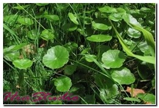Antanan besar atau dikenal juga dengan nama pegagan adalah tanaman yang banyak tubuh di daerah yang lembab atau basah seperti di pinggi sawah ataupun di sela-sela batu. Ciri khas pegagan adalah daunnya berbentuk bundar mirip mangkok. Kadang dikonsumsi sebagai lalapan.
Khasiat: Hepatitis, campak, amandel (Tonsilis), demam, bronkhitis, sakit tenggorokan, mata merah, keracunan, wasir, cacingan, batuk darah, lepra, mimisan, ayan, dll.
Kandungan: Gilikosida triterpenoida, Glikosida saponin, hidrocotylin, isothankuniside, madasiatic acid, kalium, thankuniside, carotenoid, centellose, meso inopsitod, dll.
Cara membuat ramuan tanaman obat Antanan Besar:
Siapkan 1 genggam daun pegangan, setengah genggam daun jintan hitam, 5 batang tapak liman, 1 sendok makan madu, dan 200 ml air putih (2 gelas).
Rebus semua bahan (kecuali madu) dalam panci berisi air 200 ml. Saring dan campurkan dengan madu. Minum saat pagi dan sore hari secara teratur.
Bisa juga dihaluskan kemdian dicampur dengan bedak dingin dan diaplikasikan pada wajah sebagai masker.
11. Anyang-anyang (Elaeocarpus grandiflora)
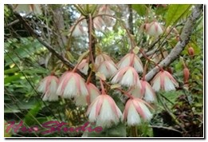Anyang-anyang / Ki Sambit / Raja Sor / Kemaitan adalah tanaman yang memiliki segudang khasiat dalam menyembuhkan berbagai macam penyakit. Tanaman ini menghasilkan bunga berwarna putih / merah dan berambut sehingga sering pula dijadikan sebagai tanaman hias di pekarangan.
Khasiat: Peluruh kencing (deuritik), kencing nanah, demam, cacingan, radang atau infeksi kandung kemih, dll.
Kandungan: saponin, elaeokarpid, zat samak, minyak atsiri, dll.
Cara membuat ramuan tanaman obat Anyang-anyang:
Daun anyang-anyang sebanyak 4 gram direbus bersama dengan tanaman obat lainnya seperti temulawak, daun sembung, dan meniran dalam 1 gelas air. Minumlah airnya dua kali sehari secara teratur selama 2 minggu.
12. Asam Jawa (Tamarindus indica)
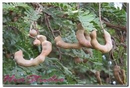Asam jawa selain digunakan buahnya untuk menambah citarasa masakan, juga banyak dimanfaatkan sebagai obat untuk beberapa jenis penyakit. Bagian yang paling banyak digunakan adalah daging buahnya, kulit biji (cangkang), dan juga daunnya.
Khasiat: Difteri, disentri, eksim, ambeien, mengobati darah rendah, nyeri haid, demam, sariawan, bisul, batuk kering, rematik, keputihan, alergi, campak, dll.
Kandungan: Asam malat, asam suksinat, asam sitrat, asam tartrat, asam asetat, kalium, prolin, vitamin B3, peptin, serin, lemak dsb.
Cara membuat ramuan tanaman obat asam jawa:
Cara membuat ramuan herbal dari asam jawa dan gula merah cukup lembutkan asam 5 g, kunyit 10 g, temulawak 10 g. Kemudian tambahkn air panas secukupnya dengan tambahan larutan gula merah dan madu. Saring lalu minum ramuan ini.
13. Awar-awar (Ficus Septica Burm. L)
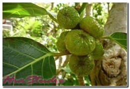Daun dari tanaman awar-awar banyak digunakan dalam pengobatan berbagai macam penyakit. Nama awar-awar berbeda untuk tiap-tiap daerah, seperti Bar-abar (Madura), Tobotobo (Makassar), Sirih popar (Ambon), Dausalo (Bugis), dll.
Khasiat: Sesak nafas, bisul, asma, penawar racun, kepala pusing, dan sebagai obat pencahar.
Kandungan: Kumarin, flavonoid genistin, kaempferitrin, alkaloid antofin, fenolik, pirimidin, sementara daun dan batang awar-awar mengandung tylocrebin dan alkaloid isotylocrebin.
Cara membuat ramuan tanaman obat awar-awar:
Daun awar-awar yang masih segar secukupnya dan air secukupnya. Dipipis sampai membentuk pasta dan oleskan pada bagian kulit yang terkena sakit.
14. Balsem (Myroxilon balsanum Harms.)
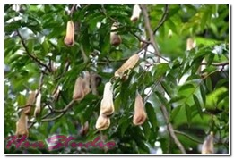Balsam atau dikenal juga dengan nama Peru Balsam adalah tanaman pohon yang banyak digunakan dalam pengobatan herbal. Bagian yang paling banyak dimanfaatkan adalah getah dari daunnya.
Khasiat: Mengobati serak, diare, dan luka luar.
Kandungan: Benzyl-benzoat, benzyl-cinnamate, dan minyak atsiri.
Cara membuat ramuan tanaman obat balsem:
Getah yang terdapat pada daun balsem dioleskan pada bagian yang luka.
15. Bakung (Crinum asiaticum L.)
 Bunga bakung termasuk tanaman bunga yang banyak dijumpai di pekarangan rumah dan di pinggir jalan. Di luar negeri, bunga bakung dikenal dengan nama bunga lily. Tidak hanya sebagai tanaman hias, tapi juga dimanfaatkan sebagai tanaman obat herbal untuk berbagai penyakit.
Bunga bakung termasuk tanaman bunga yang banyak dijumpai di pekarangan rumah dan di pinggir jalan. Di luar negeri, bunga bakung dikenal dengan nama bunga lily. Tidak hanya sebagai tanaman hias, tapi juga dimanfaatkan sebagai tanaman obat herbal untuk berbagai penyakit.
Khasiat: Mengobati kolestrol, luka (borok), bengkak, muntah, sakit pinggang, rematik, sakit gigi, dll.
Kandungan: Pada umbi, akar, dan bijinya, bunga bakung mengandung senyawa asetilkorin, alkaloid likorin, dan krinin. Sedangkan pada bunganya mengandung tanin, saponin, dan flavonoid.
Cara membuat ramuan tanaman obat bunga Bakung:
Untuk mengobati luka luar, daun tanaman bakung diolesi minyak kelapa lalu dilayukan di atas api. Daun tersebut kemudian ditempelkan pada area yang sakit.
16. Bambu Tali (Asparagus cochinchinensis)
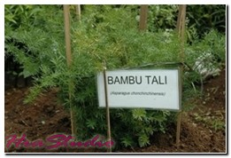Bambu tali tergolong tanaman merambat dan bercabang banyak. Biasanya banyak ditemui tumbuh di semak belukar atau di sela-sela batu. Bagian yang paling banyak digunakan sebagai bahan pengobata adalah umbinya yang telah dikeringkan.
Khasiat: Mengobati tumor, sakit tenggorokan, kencing manis, TBC, membersihkan paru-paru, dll.
Kandungan: Beta sitosterol, glukosa, fruktosa, saponin, asparagina.
Cara membuat ramuan tanaman obat bambu tali:
Siapkan 20-40 gram umbi bambu tali yang telah dikeringkan, rebus dalam air 600 cc. Tunggu hingga airnya tinggal 200 cc. Air rebusan tersebut diminum 3 kali sehari.
17. Bandotan (Ageratum conyzoides L.)
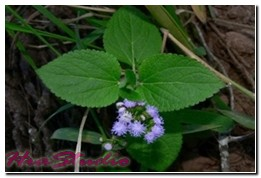Anda pasti sudah tidak asing lagi dengan tanaman yang satu ini. Memiliki bunga berwarna putih-ungu dengan bulu-bulu halus berukuran kecil. Bandotan banyak ditemukan tumbuh liar di pinggir jalan dan biasanya dianggap sebagai gulma padahal bandotan mengandung senyawa yang berfungsi mengobati beberapa macam penayakit.
Tanaman bandotan memiliki banyak sebutan lain seperti dus-bedusan (Madura), babadotan (Sunda), rumput balam (Pontianak), dan wedusan (Jawa).
Khasiat: Mengobati luka, demam, obat tetes mata, sakit perut, bengkak, patah tulang, dll.
Kandungan: alkaloid, kumarin, minyak esensial, sitosterol, dsb.
Cara membuat ramuan tanaman obat Bandotan:
Cuci bersih daun bandotan, haluskan lalu oleskan pada area yang terluka. Untuk penyakit dalam, daunnya direbus dan air rebusan tersebut bisa diminum.
18. Bangle / bengle (Zingiber purpureum)
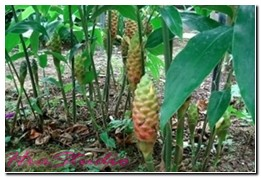Bangle adalah tanaman rempah-rempah yang masih berkerabat dekat dengan suku temu-temuan. Selain sebagai bumbu dapur, bangle juga dimanfaatkan sebagai bahan pengobatan tradisional. Ciri khas dari tanaman ini adalah memiliki bunga berbentuk tandan dan daun kelopak yang tersusun seperti sisik berwarna merah menyala.
Khasiat: Mengobati sakit perut, demam, sakit kuning, sakit kepala, cacingan, rematik, melancarkan pencernaan, menurunkan berat badan, mengobati batuk berdahak, masuk angin, begah, dll.
Kandungan: Butadiene, phenylbutanoids, sabinene, terpinen, cassumunarin, pinene, caryophyllene, ocinene, triquinacene, dll.
Cara mengolah ramuan obat bangle:
Sama halnya dengan rempah-rempah lainnya, rimpang bangle juga banyak ditambahlan sebagai campuran jamu tradisional.
19. Bangun-Bangun (Coleus amboinicus Lour.)
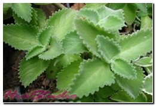Tanaman bangun-bangun adalah tanaman yang aslinya berasal dari India dan Afrika Selatan. Ciri khas dari tanaman ini adalah daunnya tebal, tepi bergerigi, dan memiliki aroma harum yang khas.
Bangun-bangun memiliki banyak nama yang berbeda di tiap-tiap daerah seperti torbangun (Batak), daun kambing (Madura), iwak (Bali), cumin (Jawa Tengah).
Kandungan: Apigenin, kalium, luteolin, minyak atsiri, quercetin, salvigenin, genkwanin, karotenoid yang tinggi, dan zat besi.
Khasiat: Mengobati penyakit malaria, mengatasi batu ginjal, kejang, asma, bronchitis, cekukan, tumor, kanker, mencegah efek radikal bebas, memperbanyak ASI, mengobati sakit gigi dll.
Cara membuat ramuan tanaman obat bangun-bangun:
Daun bangun-bangun bisa dikonsumsi langsung sebagai lalapan atau sayuran.
20. Bawang Sabrang (Eleutherine bulbosa)
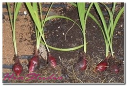Bawang sabrang dikenal pula dengan nama bawang dayak. Tanaman ini menghasilkan umbi yang banyak digunakan sebagai bahan pengobatan. Ciri khas dari tanaman ini adalah umbinya tidak berbau, berwarna merah, dan berbentuk bulat telur.
Kandungan: flavonoida, polifenol
Khasiat: Meluruhkan haid, membersihkan darah, mengobati kanker payudara, muntah, hipertensi, luka luar, bisul, sembelit, disentri, dll.
Cara membuat ramuan tanaman obat bawang sebrang:
Umbi bawang sabrang bisa direbus bersama dengan tanaman herbal lainnya seperti kencur atau temugiring. Selain itu, umbinya juga bisa dibakar untuk diambil sarinya.
21. Bayam Duri (Amaranthus spinousus)
 Bayam duri adalah tanaman sayuran yang biasanya diolah menjadi masakan sehat bergizi. Selain itu, akar bayam duri ternyata memiliki banyak khasiat sebagai obat. Ciri khas dari tanaman ini batangnya memiliki banyak duri di sekitarnya.
Bayam duri adalah tanaman sayuran yang biasanya diolah menjadi masakan sehat bergizi. Selain itu, akar bayam duri ternyata memiliki banyak khasiat sebagai obat. Ciri khas dari tanaman ini batangnya memiliki banyak duri di sekitarnya.
Kandungan: Amarantin, hentriakontan, rutin, spinasterol, garam fosfat, kalsium oksalat, tanin, kalium nitrat, zat besi dan vitamin (terutama vitamin A, C, K, dan B6).
Khasiat: Melancarkan pencernaan, mencegah penyakit sembelit, mengobati sakit gigi, disentri, sakit tenggorokan, diare, radang saluran nafas (bronkhitis), demam, keputihan (Leukorea), TBC Kalenjer (Skrofuloderma), radang rahim, batu empedu, kencing nanah, dll.
Cara membuat ramuan tanaman obat Bayam Duri:
Akar, batang, daun, ataupun bunganya ditumbuk halus lalu direbus dalam 1 liter air. Air rebusan tersebut disaring, diminum dua kali sehari saat pagi dan sore hari.
22. Belimbing Wuluh (Averrhoa bilimbi L.)
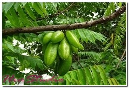Belimbing wuluh / belimbing sayur adalah tanaman yang banyak ditanam di pekarangan rumah sebagai tanaman dapur. Buahnya lebat, berbentuk lonjong. Rasanya asam namun memberi efek segar bagi tubuh. Selain sebagai pemberi rasa masam alami pada masakan, belimbing wluh juga memiliki efek pengobatan.
Kandungan: tanin, glucoside, asam format, saponin, sulfur, kalsium oksalat, perokside.
Khasiat: Menurunkan berat badan, baik untuk kulit, mengobati batuk, diabetes, panu, sakit gigi, sariawan, jerawat, menjaga kesehatan bibir, dll.
Cara membuat ramuan tanaman obat Belimbing Wuluh:
Untuk kecantikan kulit wajah: Siapkan 10 buah belimbing wuluh. Haluskan, lalu aplikasikan pada wajah layaknya masker. Tunggu hingga 10 menit, kemudian bersihkan wajah Anda.
23. Beluntas (Pluchea indica)
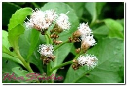Beluntas banyak ditanam untuk dijadikan sebagai tanaman pagar, bahkan seringkali tumbuh liar di pekarangan rumah. Daunnya mirip telur sunsang dengan tepi yang bergerigi. Beluntas terkenal karena khasiatnya sebagai tanaman obat.
Kandungan: Alkaloid, tannin, kalsium, flafonoida, natrium, minyak atsiri, magnesium, dan fosfor.
Khasiat: Meningkatkan nafsu makan, menghilangkan bau mulut dan bau badan, membantu melancarkan pencernaan, nyeri tulang, meluruhkan keringat, keputihan, meredakan demam, sakit pinggang, dan peluruh keringat.
Cara membuat ramuan tanaman obat beluntas:
Siapkan 20 lembar daun beluntas segar yang masih muda dan akar tapak liman. Rebus dalam air 3 gelas, tunggu hingga tersisa 1 gelas. Minum airnya sehari sekali sebanyak 1/4 gelas.
24. Bengkuang (Pachyrhizus Erosus)
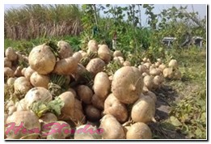Selain enak dibuat rujak, bengkoang juga banyak dimanfaatkan sebagai obat tradisional. Bagian yang paling banyak digunakan adalah daun dan umbinya. Rasanya manis dan bersifat sejuk (dingin).
Kandungan: Energi, karbohidrat, kalsium, protein, serat, zat besi, lemak, kalium, vitamin B1, vitamin C, dan fosfor.
Khasiat: Mengobati batu ginjal dan empedu, melancarkan pencernaan, menurunkan kadar kolesterol, menjaga sistem kekebalan tubuh, mengobati asma, menghilangkan flek dan jerawat, demam, dll.
Cara membuat ramuan tanaman bengkuang:
Bengkuang bisa dikonsumsi secara langsung, dibuat rujak atau acar. Bisa juga dibuat masker wajah.
25. Bidara (Ziziphus mauritiana)
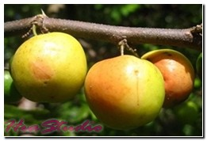Bidara atau Chinese date, indian plum, jujube adalah tanaman buah yang banyak diperjual belikan sebagai buah segar. Biasanya dibuat manisan, di jus atau dikeringkan. Selain menghasilkan buah, daun bidara juga banyak digunakan dalam pengobatan tradisional.
Kandungan: Karoten, vitamin A dan C, lemak, Protein, kalsium, zat besi dsb.
Khasiat: Penghilang depresi, menyembuhkan luka dengan cepat, meningkatkan nafsu makan, mengobati diabetes, menyehatkan mulut, baik untuk lambung, mencegah bakteri dan virus, anti kanker dan tumor, mengobati keputihan pada wanita, mengatasi haid yang tidak lancar, menjaga kesehatan gigi, mencegah jerawat, menguatkan rambut, dll.
26. Biduri (Calotropis gigantea)
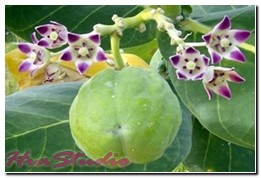Biduri merupakan tanaman perdu yang menghasilkan bunga berwarna ungu atau putih. Widuri terkenal sebagai tanaman herba dengan berbagai manfaat luar biasa bagi tubuh.
Kandungan: kalotoksin, kalaktin, saponin, sapogenin, flavonoida, polifenol, tanin, kalsium oksalat, dll.
Khasiat: Obat batuk, encok, sesak nafas, kusta, tertusuk duri, sakit gigi, campak, sariawan, kudis, sakit telinga, gatal-gatal, dll.
Cara membuat ramuan obat biduri:
Bagian yang paling banyak dimanfaatkan adalah getahnya, getah biduri bisa langsung diteteskan pada area yang sakit seperti pada gigi yang sedang sakit atau area yang tertusuk duri. Daunnya juga bisa direbus atau dicampurkan minyak kelapa lalu diaplikasikan pada area yang sedang sakit.
27. Binahong (Anredera cordifolia)
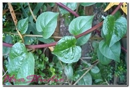
Binahong atau di luar negeri dikenal dengan nama Heartleaf maderavine madevine. Tanaman ini sudah lama diketahui memiliki kemampuan yang luar biasa dalam mengobati berbagai macam penyakit.
Kandungan: Saponin, minyak atsiri, alkaloid, polifenol.
Khasiat: Mencegah stroke, melancarkan buang air kecil dan buang air besar, mempercepat pemulihan kesehatan setelah operasi, radang usus, khitan, melahirkan, dan segala luka-luka dalam, mencegah tumor dan kanker, mengobati rheumatik, sakit persendian, flu tulang, wasir (ambeien), sakit perut, pusing-pusing, kolestrol, penghangat badan, dsb.
Cara membuat ramuan obat binahong:
Siapkan daun binahong sebanyak lima lembar, rebus dalam 2 gelas air. Biarkan mendidih hingga tersisa setengahnya. Saring airnya kemudian tambahkan madu 1 sdm. Minum ramuan tersebut satu gelas per hari.
28. Belustru (Luffa aegyptiaca)
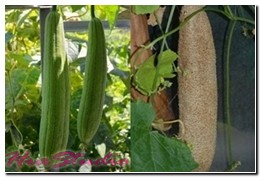Belustru adalah tanaman sayuran buah yang masih berkerabat dekat dengan suku labu-labuan. Buah yang telah masak biasanya digunakan sebagai sepon pembersih saat mandi. Selain itu, blustru diketahui memiliki banyak manfaat untuk kesehatan. Seluruh bagian dari tanaman ini bisa digunakan dalam bahan pengobatan tradisional.
Belustru memiliki banyak nama di berbagai daerah seperti timput (Palembang), lopang (Jawa), dodahola (Halmahera), blustru (Melayu).
Kandungan: Luffein (zat pahit), citrulline, dan cucurbitacin. Bijinya mengandung a-spinasterol, protein, cucurbitacin B, minyak lemak, squalene. Getahnya mengandung saponin, xylan, lemak, vitamin B dan C, dan protein. Sabut di dalam buah belustru mengandung galactan, xylose, mannosan, xylan, selulosa, manitosa, saponin, galaktosa, vitamin A, B dan C.
Khasiat: Melancarkan air susu ibu, mengobati demam, batuk sesak, rasa haus, haid tidak teratur, keputihan, mimisan, bisul, sukar buang air besar, sakit pinggang, wasir, luka bakar, digigit ular, bisul, kurap, sakit tenggorokan, bisul, sinusitis, wasir, dsb.
Cara membuat ramuan obat belustru:
Cara meramu blustru berbeda-beda untuk tiap sakit yang diderita. Kali ini kami akan menjelaskan cara meramu blustru khusus untuk mengobati wasir. Caranya, siapkan segenggam daun blustru lalu ris-iris, daun tersebut kemudian direbus dalam 8 liter air selama 10 menit. Tunggu hingga hangat, kemudian penderita bisa berendam dalam air tersebut.
29. Boroco (Celosia argentea)
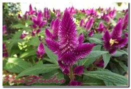Tanaman boroco / bayam kucing sebenarnya merupakan tanaman berbunga yang banyak ditemui tumbuh liar dan sebagian lainnya memanfaatkannya sebagai tanaman hias. Ciri khas dari tanaman ini adalah memiliki bunga berwarna ungu-putih mirip ekor kuda atau kemoceng.
Kandungan: Alkaaloida, asam amino, glikosida, tannin, flavonoida, saponin, fitosterol, protein, dan karbohidrat.
Khasiat: Mengatasi keputihan, mutah darah, keratitis (radang kornea mata, hipertensi, dan iritasi mata.
Cara membuat ramuan obat boroco:
Untuk mengatasi tekanan darah tinggi: Siapkan 30 gram biji boroco dalam segelas air mendidih. Diamkan hingga tersisa 1/2 gelas. Biarkan dingin dan minum saat pagi dan sebelum tidur.
30. Brotowali (Tinospora crispa)
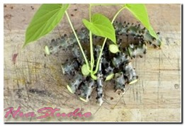Brotowali atau bratawali adalah salah tanaman obat yang cukup terkenal di Indonesia. Ciri khas dari tanaman ini adalah daunnya yang berbentuk jantung, sedikit bundar, dan berwarna hijau. Batangnya memiliki rasa yang sangat pahit.
Kandungan: Alkaloid, kolumbina, berberina, damar lunak, glikosida pikroretosid, pati, zat pahit pikroretin, palmatin, hars, berberin, dan kokulin (pikrotoksin).
Khasiat: mempercepat penyembuhan luka, menambah nafsu makan, menurunkan gula darah, mengatasi masalah kulit, menurunkan demam, mengobati rematik, menyembuhkan hepatitis, memperbaiki kinerja sistem syaraf, mengobati malaria, gatal, luka bakar, diare, sakint pinggang, memar, nyeri, dll.
Cara membuat ramuan obat brotowali:
Untuk menyembuhkan rematik, rebus daun dan batang brotowali kemudian minum air rebusan tersebut 1/2 gelas per hari.
31. Buah Buni (Antidema thwaitesianum)
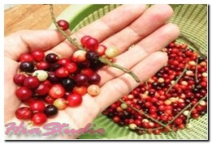Buah buni atau di luar negeri dikenal sebagai bacca / berry. Ciri khas dari tanaman ini adalah buahnya yang sekilas mirip anggur, namun ukurannya kecil.
Kandungan: Provitamin A (karotenoid), vitamin C, B1, B2, dan vitamin E, kalium, fosfor, mineral besi, serat, alkaloida dan friendelin.
Khasiat: Meningkatkan daya tahan tubuh, mengobati sipilis, menyehatkan mata, mencegah kanker, melancarkan pencernaan, mengobati penyakit kulit, hipertensi, bisul, jerawat, dll.
Cara membuat ramuan buah buni untuk obat: Buah buni bisa dikonsumsi segar dan daun mudanya bisa dikonsumsi sebagai lalapan.
32. Buah Makasar (Brucea javanica)
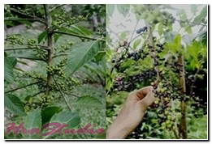Buah makassar dikenal juga dengan nama amber merica adalah tanaman yang seluruh bagiannya bisa digunakan sebagai bahan pengobatan. Tanaman ini menghasilkan buah batu berbentuk bulat, berukuran kecil-kecil yang sangat banyak dalam satu.
Kandungan: Minyak lemak, asam linoleat, asam palmitolea, asam oleatm, asam stearat, dll.
Khasiat: Mengobati disentri, malaria, diare, wasir, sakit pinggang, kanker rahim, kanker serviks, kutil, mata ikan, dll.
Cara membuat ramuan obat buah makasar:
Untuk mengatasi keputihan, buah makasar (sekitar 20 buah) direbus direbus dalam pot tanah menggunakan 400cc air. Rebus hingga tersisa setengahnya. Semprotkan air rebusan yang telah didinginkan tersebut pada daerah vital wanita. Lakukan 2-3 kali sehari.
33. Bunga Kancing (Gomphrena globosa)
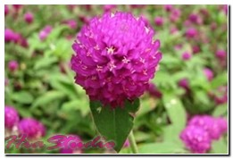Bunga Gomphrena (Gomphrena globosa) atau bunga kancing, globe amaranth, vadamalli, dan makhmali. Ciri khas dari tanaman ini adalah bunganya yang berbentuk globe (bulat) bernuansa ungu, merah, pink, putih, hingga jingga. Ternyata, selain sebagai tanaman hias, bunga kancing juga banyak dimanfaatkab sebagai tanaman obat.
Kandungan: Amaranthin, polifenol, minyak atsiri, flavon, glutamat, saponin, gomresin, dan dekarboksilase.
Khasiat: Mengobati radang mata, diuretik, obat asma, peluruh dahak, sesak napas, disentri, luka atau koreng, radang saluran napas, obat batuk, penambah nafsu makan, dll.
Cara membuat ramuan obat bunga kancing:
Siapkan 10 kuntum bunga kancing dengan 750 ml air. Rebus hingga airnya tersisa segelas. Minum air rebusan tersebut 3 kali sehari sebanyak 1/3 gelas.
34. Bunga Lilin (Pachystachys lutea)
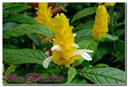Bunga lilin atau Lollipop Plant merupakan tanaman hias dengan ciri khas bunganya berwarna kuning tersusun ke atas membentuk pagoda dan menyerupai udang. Selain sebagai tanaman hias pekarangan, bunga lollipop juga dimanfaatkan dalam pengobatan tradisional.
Kandungan: Alkaloid, pohifenol, saponin.
Khasiat: Mengobati diare
Cara membuat ramuan obat bunga lilin:
Siapkan daun bunga lilin sebanyak 60gr lalu rebus dalam 1 gelas air selama 15 menit. Saring dan tunggu hingga dingin. Minumlah air rebusa tersebut 2-3 kali sehari.
35. Bunga Matahari (Helianthus Annuus)
Siapa sangka bunga cantik yang satu ini juga banyak digunakan dalam pengobatan.
Kandungan: Minerals, Kalsium, Tembaga, Zat Besi, Magnesium, Manganese, Phosphorus, Selenium, Zinc, Phyto-nutrients, Carotene, Crypto-xanthin-ß, Lutein-zeaxanthin, vitamin, dll.
Khasiat: Mencegah penyakit kardiovaskular, anti-inflamasi, menenangkan otot, saraf, dan pembuluh darah, mencegah serangan jantung dan stroke, meningkatkan proses detoksifikasi, menurunkan kadar gula dalam darah, baik untuk pertumbuhan anak, mengurangi depresi, bermanfaat untuk perkembangan janin.
Cara membuat ramuan obat Bunga Matahari:
Biji bunga matahari bisa dikonsumsi dengan cara direbus atau digoreng sebagai snack sehat. Selain itu, helai mahkota bunga matahari bisa dikonsumsi karena termasuk tanaman edible flowers.
36. Bunga Pagoda (Clerodendrum japonicum)
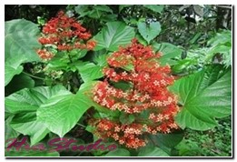Bunga pagda yang biasanya kita temui di pekarangan rumah ternyata memiliki manfaat untuk kesehatan. Tanaman ini memiliki bunga yang mencolok, berwarna merah membentuk pagoda. Tidak hanya bunganya, daun dan akarnya pun banyak digunakan untyk mengobati berbagai macam penyakit.
Khasiat: Membantu mengobati gondok, sulit tidur (insomnia), wasir berdarah (hemoroid), bisul dan korengan, keputihan, mengobati luka, dll.
Cara membuat ramuan obat Bunga Pagoda: Keringkan bunga atau akarnya. Tumbuk atau giling akar / bunga pagoda yang telah dikeringkan tersebut hingga menjadi serbuk. Seduh layaknya ketika minum teh. Minumlah setiap hari sebelum tidur. Ramuan ini berfungsi untk mengobati insomnia.
37. Cabe Jawa (Piper retrofractum)
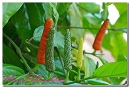Cabe jawa adalah salah satu tanaman obat yang memiliki buah tumbuh ke atas berukuran panjang. Rasanya pedas dan sedikit panas, sementara akarnya bersifat panas dan juga pedas. Bagian yang paling banyak dimanfaatkan sebagai tanaman obat adalah akar dan buahnya.
Kandungan: Zat pedas piperin 4-6%, minyak asiri sekitar 0,9%, dammar, metil piperat, piperloguminine, piplartin.
Khasiat: Mengobatoi demam, beri-beri, sakit gigi, anemia, kolera, sakit kepala, mual, flu, sakit pinggang, rematik, diare, lemah syahwat, stroke, membersihkan rahim setelah melahirkan, batuk, dll.
Cara membuat ramuan obat cabe jawa:
Siapkan 3 buah cabe jawa kering, haluskan. Kemudian rendam dalam minyak kelapa sebanyak 50cc selama 14 hari. Aduk dan kocok. Minyak ramuan ini dapat digunakan untuk menghangatkan badan dan menghilangkan rasa nyeri.
Bisa juga akar cabe jawa yang telah kering dipotong-potong. Kemudian direbus dalam 3 gelas air, biarkan mendidih hingga tersisa 1 gelas. Saring, dinginkan dan minum 1/2 gelas 2 kali sehari.
38. Cakar ayam (Selaginella doederleinii hieron)
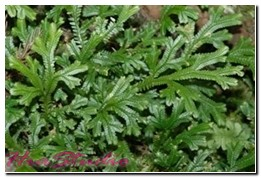Tanaman cakar ayam adalah salah satu tanaman hias daun yang juga dimanfaatkan sebagai tanaman obat. Sesuai namanya, bentuk daunnya mirip cakar ayam. Tumbuh pendek, tingginya hanya 35 cm saja.
Kandungan: Alkaloid, phytosterol, sapotin, flavonoid, glikoida, hemostatik, anti-kanker, sifat anti-piretik, anti-racun dan anti-inflamsi.
Khasiat: Menghentikan pendarahan, membersihkan darah, engatasi demam, mencegah penyakit Infeksi Saluran Kemih (ISK), mencegah radang, enyehatkan ginjal, membantu penyembuhan patah tulang, mengobati penyakit kulit, anti racun, dll.
Cara membuat ramuan obat cakar ayam:
Siapkan daun cakar ayam yang masih segar dan sudah dibersihkan, lalu keringkan di bawah sinar matahari. Seduh daun kering tersebut dalam segalas air panas. Minum ramuan tersebut secara teratur.
Untuk pengobatan luar, daun cakar ayam cukup ditumbuk dan dibalurkan pada kulit yang bermasalah.
39. Ceguk (Combretum indicum)
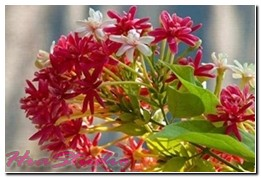Ceguk adalah tanaman bunga sekaligus tanaman obat yang juga dikenal sebagai tanaman wedani, cekluk, kaceklik (Jawa), bidani (Sunda), wudani (Melayu). Ciri khas dari tanaman ini adalah bunganya berwarna putih campur merah-ungu.
Kandungan: Saponin, tannin, protein, kalsium oksalat, lemak, peroksidase, sulfur, cyanidine monoglycoside, dan potassium quisqualata.
Khasiat: Mengobati sakit telinga, cacing kremi, sakit kepala, jamur kulit, cacing gelang (ascariasis), cacing tambang, dll.
Cara membuat ramuan obat ceguk:
Siapkan 3 gram biji ceguk, 3 gram rimpang temu giring, 2.5 gram rimpang temu hitam, dan 100 ml air. Rebuslah semua bahan dalam air yang telah disiapkan. Saring airnya dan minum sekali sehari.
40. Cempaka Kuning (Michelia campaca L.)
Cempaka kuning tidak hanya terkenal karena aromanya yang khas, tapi juga banyak dijadikan sebagai tanaman obat. Bagian dari tanaman ini yang banyak digunakan dalam pengobatan adalah kulit batang, daun, dan bunganya.
Kandungan: Alkaloida, zat samak, resin, damar, tanin, palmitin, minyak terbang (methyleugenol, linalol, cheraniol, eugenol isoeugenol)
Khasiat: Mengobati radang tenggorokan (pharyngitis), pusing (vertigo), demam, dispepsia (gangguan pencernaan), radang amandel, keputihan, rematik, cacingan, haid tidak teratur, kencing nanah, dll.
Cara membuat ramuan obat dari cempaka kuning:
Untuk pemakain luar: Daun cempaka kuning dicuci hingga bersih lalu dihaluskan kemudian digosokkan di bagian tubuh yang sakit.
Untuk pemakaian dalam: Daun atau kulit cempaka kuning sebanyak 15-60 gram direbus, kemudian airnya diminum.
41. Cendana (Santalum album)
 Kayu cendana adalah salah satu tanaman penghasil kayu dan minyak cendana. Karena aromanya yang khas, kayu cendana banyak dijadikan sebagai rempah-rempah, aromaterapi, parfum, bahan dupa, dan juga sebagai sangkur. Selain itu, cendana juga memiliki senyawa yang baik untuk kesehatan.
Kayu cendana adalah salah satu tanaman penghasil kayu dan minyak cendana. Karena aromanya yang khas, kayu cendana banyak dijadikan sebagai rempah-rempah, aromaterapi, parfum, bahan dupa, dan juga sebagai sangkur. Selain itu, cendana juga memiliki senyawa yang baik untuk kesehatan.
Kandungan: Minyak atsiri, santalol, santalen, zat samak, hars, saponin, polifenol, tanin, flavonoida, dsb.
Khasiat: Mengobati masuk angin, penyakit jantung, bronchitis, demam, gangguan kulit, infeksi saluran kemih, keluhan kandung empedu dan hati, radang muut, anti depressant, menjaga sistem kekebalan tubuh., menghilangkan minyak berlebih pada wajah, memgatasi keriput, dll.
Cara membuat ramuan obat cendana:
Siapkan 2 sdm bubuk kayu cendana dan air mawar, campur keduanya hingga membentuk pasta. Aplikasikan pada wajah , biarkan hingga 15 menit. Bersihkan wajah.
42. Cengkeh (Syzygium aromaticum)
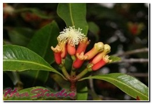Cengkeh telah lama diketahui memiliki senyawa yang sudah tidak diragukan lagi kemampunnya sebagai obat tradisional. Tanaman ini menghasilkan buah yang diolah menjadi rempah untuk bumbu masakan.
Kandungan: Vitamin A,B dan C, minyak atsiri, flavonoida, fenilin, saponin, resin, dan ugenol yang semuanya sangat dibutuhkan oleh tubuh.
Khasiat: Meredakan batuk, mengobati infeksi pernapasan, menghilangkan guratan pada kulit, mencegah peradangan pada tubuh, mengobati sakit gigi, menghitamkan alis mata, dan baik untuk rambut, mengatasi sinusitis, dll.
Cara membuat ramuan obat dari cengkeh:
Untuk mengatasi sakit gigi: Sediakan kapas lalu teteskan minyak cengkeh kemudian sumbat pada gigi yang berlubang. Atau, bsia juga menggunakan cara lain yaitu sbanyak 10 butir cengkeh digiling hingga halus, maukkan pada lubang gigi dan tutupi dengan kapass. Lakukan sebanyak dua kali sehari.
43. Ceraka Merah (Plumbago indica L.)
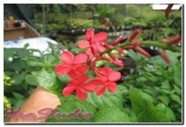Salah satu tanaman obat yang juga menghasilkan bunga yang cantik adalah ceraka merah atau dikenal pula dengan nama akar binasa atau meluhatu. Tanaman ini memiliki kandungan racun yang sangat kuat (plumbagon dan plumbagin). Yang membedakan ceraka merah dengan daun encok terletak pada bunganya, jika daun encok memiliki bunga berwarna putih, sementara ceraka merah berbunga merah.
Kandungan: Plumbagin, plumbagol, steroid, zat samak, leukodelfinidin.
Khasiat: Mengobati sakit kepala, rematik, kaki gajah, asites, sakit gigi, dan mencegah kelumpuhan.
Cara membuat ramuan obat dari ceraka merah:
Sebagai pengobatan luar, daun ceraka merah dapat dilumatkan kemudian dicampur dengan minyak kelapa. Ramuan ini dipercaya mampu mengobati sakit kepala dan rematik.
44. Ceremai (Phyllanthus acidus)
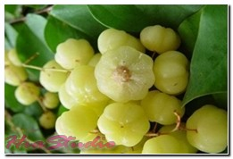Ceremai tidak hanya enak dinikmati buahnya saja, tapi juga bagian-bagian tanamannya bisa dimanfaatkan untuk mengobati penyakit. Ciri khas dari tanaman ini adalah buahnya yang lebta bergantungan atau dalam untaian berwarna putih kekuninga.
Kandungan: Polifenol, tanin, saponin, flavonoida, karbohidrat, serat, protein, dan lemak.
Khasiat: Mengobati asma, kanker, tumor, semeblit, dan menurunkan berat badan.
Cara membuat ramuan obat dari ceremai:
Buah ceremai bisa dikonsumsi langsung dengan cara diolah menjadi manisan. Sedangkan untuk menurunkan berat badan, daun ceremai (kira-kira segenggam), cuci bersih dan rebus dalam air 3 gelas, lalu sisakan 2 gelas. Minum saat pagi dan sore hari.
45. Cincau Hijau Perdu (Premna oblongifolia, M.)
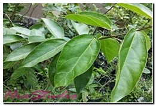Cincau adalah salah satu minuman yang banyak berwujud gel menyerupai agar-agar. Cincau ini berasal dari daun tanaman cincau yang berwarna hijau. Selian enak dikonsumsi, tanaman cincau hijau juga banyak dimanfaatkan sebagai tanaman obat.
Kandungan: Karbohidrat, tetrandine, zat lemak, senyawa alkaloid, zat anti-protozoa, dll.
Khasiat: Antioksidan alami, mengobati demam, anti inflamasi alami, mengatasi diabetes melitus, antibiotik alami, mengatasi masalah darah tinggi, mengatasi radang lambung, mengatasi penyakit tumor dan kanker, mengatasi keracunan karena seafood, membantu pengobatan tifus, mencegah osteoporosis, mengobati diare, mengatasi masalah otot, dll.
Cara membuat ramuan obat dari cincau hijau:
Untuk pengobatan luar, daun cincau hijau dihaluskan kemudian oleskan pada bagian tubuh yang sakit. Sementara untuk pengobatan dalam, daun cincau direbus kemudian disaring, air rebusan daun cincau tersebut diminum secara teratur.
46. Cincau Hitam (Mesona chinensis)
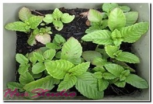Selain cincau hijau yang tumbuh perdu, cincau hitam juga banyak diolah untuk dijadikan sebagai cincau yang biasa ditemukan dalam campuran es buah. Tanaman yang juga dikenal sebagai janggelan ini memiliki penampakan yang mirip dengan daun kemangi.
Kandungan: Tanin, saponin, isokandrodendrin, flavonoida, asam kafeat, fenol, flavoid, dll.
Khasiat: Mengatasi panas dalam, keputihan, diare, sakit perut, gangguan pencernaan, batuk, tekanan darah tinggi, dll.
47. Ciplukan (Physalis angulata)
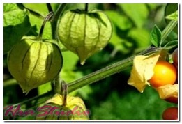Siapa sangka tumbuhan liar yang satu ini kini semakin populer dijadikan sebagai obat untuk berbagai macam penyakit. Ciplukan ditandai dengan buahnya yang ditutupi kelopak bunga berbentuk jantung.
Kandungan: Akaloid, asam malat, kriptoxantin, tanin, gula, dan vitamin C.
Khasiat: Mencegah dan mengobati sariawan, epilepsi, hipertensi, bisul, vertigo, penetral racun, meluruhkan air seni (diuretik), meredakan batuk, pilek / flu, memberi cadangan energi, mengobati radang tenggorokan, menyembuhkan penyakit kelenjar getah bening, luka, sakit jantung, asma, diabetes, stroke, dll.
Cara membuat ramuan obat dari ciplukan:
Konsumsilah 10 butih buah ciplukan setiap hari secara rutin dan rasakan manfaatnya. Untuk pengobatan luar: Buah ciplukan dihaluskan lalu dioleskan pada area yang luka. Untuk pengobatan dari dalam: Daun, batang, dan akarnya direbus dalam air secukupnya hingga mendidih. Saring lalu minum ramuan selagi hangat 3 kali sehari secara teratur.
48. Coca Cola / Kola Nut (Cola acuminata)
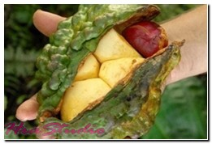Anda pasti sudah pernah mencoba minuman soft drink Coca Cola. Nah, bahan utama dari minuman tersebut adalah dari buah Kola Nut. Tanaman ini aslinya berasal dari Afrika. Selain bahan minuman, kola nut juga banyak dimanfaatkan sebagai obat untuk beberapa macam penyakit.
Kandungan: Kola tanin, alkaloid kafeina, minyak lemak, teofilina, kolatin, zat pati, gula dsb.
Khasiat: Menambah nafsu makan, mencegah kanker prostat, sakit kepala, diare, dll.
49. Cocor Bebek (Kalanchoe pinnata)
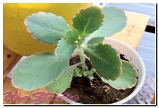Cocor bebek adalah salah satu tanaman yang sudah sejak lama digunakan dalam pengobatan tradisional. Tanaman ini memiliki daun yang tebal dan sangat mudah tumbuh dari tunas daunnya. Memberi sensasi dingin dan rasanya sedikit asam.
Kandungan: Asam formiat, biofilin, damar, kalsium oksalat, magnesium malat, glikosida, tanin, damar, dan zat lendir.
Khasiat: Mengatasi sakit kepala, bisul, nyeri lambung, amandel, ambien, radang telinga luar, rematik, muntah darah, demam, disentri, asma dan nyeri dada, perut kembung, melancarkan menstruasi yang tidak teratur, sakit gigi, dll.
50. Cong-Cong Belut (Bridelia ovata)
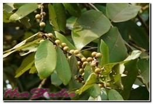Cong-cong belut merupakan salah satu tanaman yang banyak digunakan dalam perawatan rambut. Banyak ditanam sebagai tanaman obat keluarga di pekarangan rumah.
Kandungan: Flavonoida, tanin, saponin, alkaloida.
Khasiat: Obat pencahar, mengobati penyakit sifilis / raja singa, kanker dan juga berkhasiat untuk menjaga kesehatan rambut.
51. Culantro (Eryngium foetidum L.)
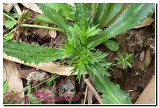Tanaman culantro atau yang akrab dikenal dengan sebutan ketumbar mungsi merupakan tanaman dapur yang juga dimanfaatkan sebagai bahan pengobatan tradisional, terutama digunakan sebagai bahan campuran jamu. Ciri khas dari tanaman ini adalah daunnya yang berbentuk majemuk dengan pembungaan menyerupai payung. Bagian yang paling banyak dimanfaatkan sebagai obat adalah bijinya.
Kandungan: antibakteri, minyak esensial
Khasiat: Mengobati luka bakar, demam, radang paru-paru, sakit telinga, konstipasi, hipertensi, sakit perut, asma, gigitan ular, gangguan kesuburan, malaria, diare, epilepsi, dan lain-lain.
52. Dadap Ayam (Erythrina orientalis)
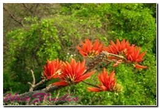Tanaman dadap ayam merupakan salah satu tanaman jenis pohon yang aslinya berasal dari Indonesia. Daunnya banyak dijadikan sebagai obat untuk beberapa macam penyakit.
Kandungan: Glukosa sianidia, alkaloid (pipaforin, erithrin, erisodin, erisovin), resin, dan minyak lemak.
Khasiat: Mengobati demam, batuk, pelancar ASI, haid tidak teratur, disentri, radang, rematik, dan insomnia.
Cara membuat ramuan obat dari dadap ayam:
Daun dadap serep bisa langsung dikonsumsi sebagai sayuran bersama dengan sayuran lainnya.
53. Dadap Serep (Erythrina subumbrans)
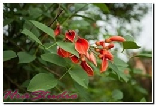Dadap serep merupakan tanaman pohon dengan batang yang cukup besar dan tumbuh tinggi. Batang dadap serep banyak dimanfaatkan sebagai obat untuk beragam penyakit.
Kandungan: Aritramina, alkaloid, erisofina, eritrina, hipaforin, hidrosianida, nitrogen, protein, dll.
Khasiat: Menurunkan panas demam, mengobati sakit kepala, radang tenggorokan, melancarkan pernafasan, mengobati batuk berdahak, asma, kesulitan tidur atau insomnia, cacingan, asam urat, disentri, obat disentri, jerawat, dll.
Cara membuat ramuan obat dari dadap serep:
Banyak orang yang mengonsumsi daun dadap serep dengan cara membuatnya lalapan dan sayuran. Atau bisa juga dengan cara daunnya direbus dalam 2 gelas air dan biarkan mendidih hingga tersisa 1 gelas. Minum airnya secara teratur saat pagi dan sore hari.
54. Dandang Gendis (Clinacanthus nutans L.)
 Dandang gensi merupakan salah satu jenis tanaman yang banyak tumbuh liar di pedesaan. Gendhis sendiri artinya gula mengacu pada rasanya yang manis. Selain banyak dijadikan tanaman pagar, dandang gendis juga memiliki banyak manfaat kesehatan.
Dandang gensi merupakan salah satu jenis tanaman yang banyak tumbuh liar di pedesaan. Gendhis sendiri artinya gula mengacu pada rasanya yang manis. Selain banyak dijadikan tanaman pagar, dandang gendis juga memiliki banyak manfaat kesehatan.
Kandungan: Minyak atsiri, alkaloid, polifenol, saponin, flavonoid, dan lain-lain.
Khasiat: Meningkatkan kekebalan tubuh, mencegah kanker, menurunkan kadar gula darah, menurunkan demam, menyembuhkan sakit kepala, melancarkan pencernaan, menjaga kesehatan ginjal, melancarkan buang air kecil, mengatasi disentri, mengatasi rematik, dll.
Cara membuat ramuan obat dari dandang gendis:
Daun dandang genis direbus dalam 3 gelas air, kemudian saring daunnya dan minum ramuan air rebusan tersebut secara teratur.
55. Daruju (Acanthus montanus)
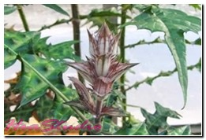Tanaman daun daruju atau jeruju merupakan tanaman semak yang telah diketahui memiliki banyak khasiat untuk kesehatan. Ciri khas dari tanaman ini adalah helai daunnya yang panjang dan ujung memiliki duri tempel. Menghasilkan bunga yang berwarna biru dan ungu.
Kandungan: Minyak atsiri, saponin, polifennol, dan flavonoida.
Khasiat: Meredakan stres, melawan kanker hati, menetralkan racun pada luka, mengbati luka sariawan, cacingan pada anak, bisul, batuk, gejala rematik, mengobati penyakit liver, meredakan sakit perut dan maag, dll.
Cara membuat ramuan obat dari daruju:
Siapkan daun daruju dan haluskan ke dalam belender sebanyak 25 gram. Teteskan dengan cuka. Saring ramuan tersebut, lalu minum airnya 2 kali sehari.
56. Daun Dewa (Gynura divaricata)
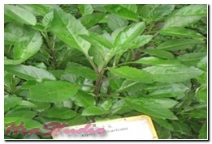Salah satu tanaman yang telah lama diketahui sebagai tanaman obat adalah daun dewa. Tanaman ini dijuluki juga sebagai ngokilo dan juga sambung nyawa terutama di daerah Jawa.
Kandungan: Minyak astiri, saponin, tannin, vanilat, asam klorogenat, Vitamin K, asam p-hidroksi benzoate, polifenol, asam p-kumarat, triterpenoid, flavonoid, sterol, alkaloid, dll.
Khasiat: Mengobati stroke, diabetes, rematik, kanker, sakit jantung, hipertensi, pembengkakan payudara, mengobati luka, kutil, gigitan binatang buas, kejang pada anak, wasir, demam berdarah, wasir, keseleo, flek hitam pada wajah, jerawat, dll.
Cara membuat ramuan obat dari daun dewa:
Daun dewa yang sudah ditumbuk dioeras airnya lalu diminum. Ramuan ini dipercaya mampu mengatasi kejang dan demam pada anak.
57. Daun Duduk (Desmodium triquetrum)
Daun duduk termasuk tanaman yang banyak tumbuh liar di pekarangan rumah. Untuk beberapa daerah, daun duduk memiliki julukan lain seperti cen-cen (Sunda) dan cocor bebek (Jawa). Tanaman ini memiliki pertulangan daun yang menyirip. Seluruh bagian tanaman bisa dijadikan sebagaia bahan pengobatan tradisional kecuali bagian akarnya.
Kandungan: alkaloida hipaforin, trigonelin, saponin, flavonoida, polifenol, tanin, asam silikat.
Khasiat: Demam, disentri, wasir, radang ginjal akut, radang usus, TBC, rematik, batu ginjal atau kencing batu, menetralkan racun, meredakan batuk, anti inflamasi, dan stomakik, peluruh air seni (diuretik), malaria, melancarkan peredaran darah, anti nyeri, dan hepatitis.
Cara membuat ramuan obat dari tanaman daun duduk:
Rebuslah daunnya dalam 1 gelas air. Hasil air rebusan tersebut bisa diminum saat pagi dan sore hari.
58. Daun Encok (Plumbago zeylanica)
 Daun Encok biasa dijumpai di pekarangan rumah, di ladang, atau di tepi-tepi saluran air. Di daerah lain, daun encok dikenal pula sebagai ki encok (Sunda), kareka (Madura), poskor (Jawa), bama (Bali), ceraka (Sumatera), dll. Tanaman ini menghasilkan bunga berwarna putih berukuran kecil.
Daun Encok biasa dijumpai di pekarangan rumah, di ladang, atau di tepi-tepi saluran air. Di daerah lain, daun encok dikenal pula sebagai ki encok (Sunda), kareka (Madura), poskor (Jawa), bama (Bali), ceraka (Sumatera), dll. Tanaman ini menghasilkan bunga berwarna putih berukuran kecil.
Kandungan: Polivenol, plumbagi (zat beracun), droseron, saponin, khitranon, plumbagin, flavonoida, komarin seselin, chitranone, dsb.
Khasiat: Pereda nyeri, anti inflamasi, mengatasi lebam, melancarkan saluran kemih, baik untuk lambung, mengatasi salah urat, obat rematik, penurun demam, anti bakteri, menangkal radikal bebas, mencegah kanker darah, mengatasi sakit kepala, obat sakit pinggang, dll.
Cara membuat ramuan obat dari daun encok:
Untuk mengatasi sakit pinggang, daun encok yang masih segar ditumbuk halus lalu dicampurkan dengan kapur sirih seperlunya. Ramuan tersebut bisa langsung dioleskan pada pinggang yang sakit.
59. Daun Inggu (Ruta angustifolia)
Tanaman daun inggu telah lama dikenal sebagai tanaman herbal. Jika dilihat sekilas, tanaman ini mirip dengan kacang tanah, hanya saja daun inggu lebih tebal dan berukuran lebih kecil.
Kandungan: Asam modic, kokusaginin, metil-noniketone, flaveol, edulinine, tanin, pinena, xanthotoxin, dll.
Khasiat: Mengatasi rasa sakit dan nyeri, mengatasi pusing, menurunkan panas demam, mengatasi pusing, mencegah kejang pada anak, penetral racun makanan, mengatasi penyakit hepatitis, membantu penyembuhan luka, menyegarkan tenggorokan, menyembuhkan bisul, cacingan, sakit kepala, dll.
Cara membuat ramuan obat dari daun inggu:
Untuk kejang pada anak, daun inggu direndam pada air cuka secukupnya sekitar 30 menit. Kemudian air ramuan tersebut dikompreskan pada anak.
60. Daun Katuk (Sauropus androgynus)
Daun katuk merupakan daun yang banyak dijumpai tumbuh subur terutana di wilayah Asia Tenggara. Katuk biasanya menghasilkan buah kecil berwarna merah. Daun katuk biasanya dibuat sayuran.
Kandungan: Potein, vitamin A, B, dan C, senyawa minyak esensial, tanin, triterpenoid, saponin, flavonoid, fosfor, dan berbagai senyawa lainnya.
Khasiat: Mencegah oeoporosis, meredakan flu, mengatasi anemia, melancarkan ASI, menyehatkan mata, dan baik untuk kesehatan pria.
Cara membuat ramuan daun katuk:
Siapkan 50 gram daun katuk, 1 sdm madu, dan 150 ml air. Bersihkan terlebih dahulu daun katuk, haluskan dalam blender, kemudian tambahkan madu. Tambahkan es batu jika suka.
61. Daun Kentut (Paederia scandens)
Tanaman daun kentut merupakan salah satu tanaman obat yang sudah tidak diragukan lagi khasiatnya. Ciri khas dari tanaman ini adalah daunnya yang beraroma mirip bau kentut. Di daerah lain, daun kentut juga dikenal sebagai daun sembukan, kasembukan, gum siki, dll.
Kandungan: Arbutin, oleanolic acid Asperuloside, deacetylasperuloside, gama-sitosterol, scandoside, paederosid, paederosidic acid, dan minyak menguap.
Khasiat: Mengobati kejang, luka pada mata / telinga, kurang nafsu makan, batuk, patah tulang, disentri, radang usus, keracubab, buang air kecil tidak lancar, dll.
Cara membuat ramuan obat dari daun kentut:
Untuk mengobati sakit perut, daun kentut bisa dibuat sayur, dikonsumsi dengan cara dikukus dan dimakan sebagai lalapan. Untuk pengobatan luar, daun kentut dilayukan di atas api lalu diikatkan di perut.
62. Daun Landep (Barleria prionitis)
Daun landep termasuk tanaman yang banyak dijadikan sebagai tanaman pagar di pekarangan rumah. Tanaman ini juga menghasilkan bunga yang cantik. Selain itu, daun landeo juga dipercaya mampu menyembuhkan berbagai macam penyakit.
Kandungan: Kalium, saponin, tanin, flavonoid, polifenol, dll.
Khasiat: Mempercepat proses penyembuhan luka, mengeluarkan cacing dalam tanah, menyembuhkan gusi bengkak, sakit gigi, mengatasi masalah pada kulit seperti panu dan kurap, menyembuhkan sakit pinggang dan reumatik, sebagai peluruh kencing, menurunkan demam, nyeri pada perut, radang telinga, dan lain sebagainya.
Cara membuat ramuan obat dari daun landep:
Untuk mengobati penyakit kulit, daun landep dihaluskan bersama dengan perasan jeruk nipis. Tapalkan pada area kulit yang terjangkit jamur / panu. Lakukan 2x sehari untuk hasil yang maksimal.
63. Daun Madu (Barleria cristata L.)
Daun madu banyak ditanam sebagai tanaman pagar. Daunnya tunggal dengan pertulangan daun yang menyirip dan menghasilkan bunga berwarna ungu. Daun madu ini memiliki banyak sekali khasiat untuk kesehatan.
Kandungan: kalsium oksalat, lemak, saponin, flavonoida, asam formik, dan substansi pektik.
Khasiat: Penawar bisa ular, obat batuk, bengkak, reumatik, dan mengobati sakit akibat gigitan serangga.
Cara membuat ramuan obat dari daun sendok:
Siapkan segenggam daun madu lalu cuci hingga bersih. Tumbuk daunnya hingga lumat dan jangan lupa tambahkan kapur sirih. Ramuan tersebut bisa dibalurkan pada bagian yang sakit.
63. Daun Salam (Syzygium polyanthum)
Daun salam populer dijadikan sebagai rempah terutama masakan kari. Daunnya memiliki aroma khas yang bisa menambah citarasa berbagai masakan. Selain sebagai rempah, daun salam ternyata juga memiliki banyak khasiat untuk kesehayan tubuh.
Kandungan: Tanin, Vitamin B kompleks, vitamin C, dan zat flavonoid.
Khasiat: Memutihkan gigi secara alami, baik untuk diet, menurunkan kadar kolesterol, tekanan darah, mengobati kencing manis, diare, maag akut, mabuk akibat alkohol, dan yang paling terkenal adalah menurunkan kadar asam urat.
Cara membuat ramuan obat daun salam:
Untuk mengobati asam urat, siapkan 10 lembar daun salam lalu rebus dalam panci berisi 10 gelas air bersih. Biarkan hingga airnya tersisa 7 gelas saja. Minum ramuan tersebut 1-2 kali sehari secara teratur.
64. Daun Sendok (Plantago major)
Tanaman daun sendok sudah sejak lama diketahui sebagai tanaman obat yang mujarab. Semua bagian tanamannya mulai dari akar, biji, dan daunnya dijadikan sebagai bahan pengobatan alami.
Di daerah lain, daun sendok juga dikenal dengan sebutan kuping menjagangan (Melayu), suri panduk (Jawa), torongoat (Minahasa), ki urat ceuli (Sunda), dll.
Kandungan: Tanin, asam sitrat, flavonoid, polifenol, dll.
Khasiat: Mengobati gangguan saluran air kemih, keputihan, disentri panas, diare, disentri panas, gangguan pada pencernaan, batuk berdarah, mimisan, kencing manis, bisul, rada selaput mata, kudis, nyeri otot, batu empedu, dll.
Cara membuat ramuan obat dari daun sendok:
Untuk luka luar, daun sendok cukup dihaluskan dan dibalurkan pada area yang terluka / sakit.
65. Daun Senna (Cassia angustifolia)
Tanaman daun senna atau dikenal pula dengan nama daun jati cina adalah tanaman yang banyak dijadikan sebagai tanamana hias pohon perdu. Ciri khas dari tanaman ini adalah bunganya yang mencolok berwarna kuning.
Kandungan: Naftalene glikosidan, sennosida, hidroksian Thrasen, dianthrone, dll.
Khasiat: Menjaga kesehatan lambung, membantu proses metabolisme dalam tubuh, melancarkan BAB, mengobati sembelit, wasir, ambeien, cacingan, infeksi lambung, obat pencahar alami, dll.
Cara membuat ramuan obat dari daun senna:
Daun senna yang telah dikeringkan diseduh dalam air panas selama beberapa menit hingga warna air berubah menjadi kecoklatan. Tambahkan sedikit madu agar rasanya lebih nikmat. Minumlah secara teratur saat pagi dan malam hari.
66. Daun Seribu (Achillea millefolium)
Daun seribu merupakan tanaman liar yang banyak tumbuh di sawah dan di ladang. Daunnya banyak dijadikan sebagai obat alami untuk berbagai macam penyakit. Kalo di luar negeri dikenal sebagai bunga yarrow, dengan bunganya yang cantik, biasanya berwarna putih.
Kandungan: Zat samak, minyak lemak, polivenol, polina, minyal atsiri, apigenin, dan flavonoid.
Khasiat: Menyembuhkan luka, menghentikan pendarahan, mengatasi perut yang sakit, menyehatkan pencernaan, pereda nyeri haid, mengatasi gangguan syaraf, obat batuk, pereda demam, pelancar haid, anti alergi, dll.
Cara membuat ramuan obat dari daun seribu:
Daun seribu yang telah dikeringkan sebanyak 30 gram direbus dalam 2 gelas air. Rebus hingga tersisa satu gelas saja. Minum ramuan tersebut 2-3 kali sehari.
67. Daun Syaraf (Hemigraphis alternata)
Salah satu tananman obat yang paling mudah dikenali adalah tanaman daun syaraf. Daunnya berwarna ungu kemerahan sehingga banyak pula yang memanfaatkannya sebagai tanaman hias.
Kandungan: Tanin, kalium, natrium, flavonoid, polifenol.
Khasiat: Mengobati disentri, menghentikan pendarahan, menyembuhkan luka, mengatasi susah buang air besar, melancarkan produksi ASI, mengobati diare, baik untuk kesehatan lambung, menyehatkan pencernaan, mencegah infeksi, dll.
68. Daun Ungu (Graptophyllum pictum)
Daun ungu tergolong tanaman perdu yang banyak tumbuh liar di pedesaan. Banyak ditanam sebagai tanaman hias karena daunnya yang atraktif. Selain itu, daun ungu juga banyak dimanfaatkan sebagai bahan pengobatan tradisional. Bagian tanaman yang kerap dijadikan sebagai tanaman obat adalah bunga dan daunnya.
Kandungan: Alkaloida non toksik, saponin, klorofil, tanin, streroida, dan glikosida.
Khasiat: Sebagai anti inflamasi, mengatasi demam, mengobati ambeien, melancarkan haid, meredakan nyeri, mengatasi plak pada gigi, batu ginjal, hepatitis, meredakan nyeri, mengobati sakit telinga, pereda rematik, mencegah sembelit, mengatasi memar, mengatasi sembelit, melancarkan kencing, dll.
Cara membuat ramuan obat dari daun ungu:
Mengonsumsi daun ungu sebagai obat hampir sama caranya dengan mengonsumsi daun obat lainnya. Siapkan kira-kira 10 lembar daun ungu, rebus dalam 2 gelas air dan tunggu hingga tersisa 1 gelas. Setelah dingin, Anda bisa mengonsumsi ramuan tersebut secara teratur.
69. Delima (Punica granatum)
Delima terkenal karena buahnya yang berwarna merah merekah dengan limpahan biji di dalamnya.
Buah delima sudah sejak lama diketahui sebagai salah satu buah dengan segudang manfaat kesehatan. Delima bahkan bisa ditanam dalam pot karena tergolong tanaman yang bisa disesuaikan (tumbuh pendek). Tidak hanya enak dikonsumsi, delima pun memiliki bagian tanaman seperti daun, kulit akar, kulit buah, dan bunganya yang bisa dimanfaatkan sebagai alternatif pengobatan alami.
Kandungan: Granatin, kalsium oksalat, pati, glukosa, maltosa, fruktosa, vitamin A dan C, tanin, mineral, granatin, betulic acid, alkaloid pelletierene, triterpenoid, kalsium oksalat, lemak, sulfur, glukosa, fruktosa, dsb.
Khasiat: Kulit buahnya mampu mengatasi sakit perut karena cacing, radang tenggorokan, nyeri lambung, keputihan (leukorea), batuk darah. Bunganya digunakan sebagai obat radang gusi dan bronkhitis. Sementara buahnya sendiri mampu menurunkan berat badan, rematik, sariawan, suara parau, dll.
Cara membuat ramuan obat dari delima:
Cucilah akar delima yang sudah dikeringkan sekitar 7 gr, kemudian potong-potong. Rebus dalam satu gelas air selama 15 menit. Dinginkan, lalu saring dan minum air rebusan tersebut sekaligus. Sedangkan untuk buahnya sendiri bisa dikonsumsi langsung atau dibuat jus.
70. Dillenia (Dillenia philippinensis Rolfe)
Dillennia atau di Indonesia dikenal sebagai simpur. Pohon dillennia sendiri banyak dijumpai di Filipina sebagai tanaman pohon penghijauan kota. Tanaman ini menghasilkan buah bulat yang juga bisa dikonsumsi.
Kandungan: Polifenol, tanin, saponin, flavonoid, alkaloid, dan vitamin C.
Khasiat: Mengobati peradangan pada usus, panas dalam, sariawan, membersihkan kulit kepala, obat kuat untuk wanita hamil, tonikum, dll.
Cara membuat ramuan obat dari dillenia:
Kulit kayu dari pohon dillenia direbus dan hasil rebusan tersebut bisa dikonsumsi secara teratur tiap pagi dan sore hari. Sementara buahnya bisa juga dikonsumsi secara lansung.
71. Dringo (Acorus calamus)
Tanaman dringo / dlingo / dlingu adalah tanaman rimpang yang memiliki daun menyerupai pita. Ciri khas dari tanaman ini adalah aromanya yang khas sehingga banyak digunakan sebagai bahan pembuatan parfum.
Kandungan: Saponin, flavonoid, minyak atsiri, protein, kalsium oksalat, dll.
Khasiat: Sebagai obat penenang, bengkak, encok, lambung, demam, rematik dan digunakan sebagai bahan pembuatan kosmetik.
Cara membuat ramuan obat dari daun dringo:
72. Ekor Kucing (Acalypha hispida)
Tanaman ekor kucing tergolong tanaman yang banyak dimanfaatkan sebagai tanaman hias karena bentuk bunganya yang cantik, menjuntai ke bawah sepanjang 12-20 cm dan berwarna merah.
Kandungan: Acalyphin, saponin, falvanoid, dan tanin.
Khasiat: Mengobati muntah darah, embantu menyembuhkan vitiligo, mengobati diare parah, radang usus, membantu menyembuhkan penyakit kusta, dll.
73. Enau (Arenga pinnata)
Enau adalah tanaman penghasil nira untuk pembuatan gula aren. Buahnya juga dikenal sebagai kolang-kaling yang banyak digunakan sebagai bahan campuran es buah. Gula aren sendiri mengandung banyak senyawa-senyawa yang sangat baik untuk kesehatan.
Kandungan: Ascorbic Acid, Thiamine (vitamin B1), Cyanocobalamin (vitamin B12), Riboflavin (vitamin B2), Pyridoksin (vitamin B6), Nicotinic Acid (vitamin B3).
Khasiat: Mengobati maag, menambah tenaga, memperlancar peredaran darah, mencegah anemia, meningkatkan daya tahan tubuh, sebagai sumber antioksidan, menjaga kadar kolestrol tubuh, mengobati sariawan, sangat baik untuk yang sedang diet, dll.
Cara membuat ramuan obat dari gula aren:
Untuk mengobati sakit maag, sediakan 1/4 gula aren, kemudian cairkan dengan cara menyeduhnya menggunakan air hangat. Cairan gula aren tersebut bisa langsung dikonsumsi.
74. Gadung (Dioscorea hispida)
Umbi gadung tergolong tanaman berumbi yang memiliki banyak sekali manfaat bagi kesehatan. Gadung bahkan bisa dijadikan pengganti beras sebagai sumber makanan pokok.
Kandungan: Zat alkaloid, polisa karida, glikoprotein.
Khasiat: mengobati penyakit kusta, menyembuhkan reumatik, menghilangkan kutil, mata ikan, dan juga kapalan, mengurangi kejang pada perut, menyembuhkan luka bernanah, menyembuhkan luka akibat sipilis, menurunkan kadar kolestrol.
Cara membuat ramuan obat dari umbi gadung:
Untuk luka luar, umbi gadung bisa langsung ditempelkan pada area tubuh yang sakit.
75. Gambir (Uncaria gambir)
Tanaman gambir tergolong salah satu tanaman penghasil getah yang terkenal karena manfaatnya dalam mengobati beberapa macam penyakit. Gambir tumbuh menjalar dan merambat.
Kandungan: Katekin (hingga 51%), flavonoid (terutama gambiriin), katekin, zat penyamak (sekitar 22%-50%), sejumlah alkaloid, dll.
Khasiat: mengobati jerawat, mengatasi berbagai gangguan mulut, mencegah penuaan dini, mengobati suara serak / parau, meredakan diare, mengobati luka bakar, mengobati sakit maag, anti alergi, menjaga kesehatan gigi, sebagai bahan baku industri, mengobati sakit kepala, mengobati hepatitis, dll.
Cara membuat ramuan obat dari tanaman gambir:
Siapkan getah gambir sebanyak 1 cm, seduh dalam air panas. Diamkan hingga air seduhan dingin dan sisa larutan getah mengendap di pada dasar gelas. Minum ramuan tersebut secara teratur.
76. Gandarusa / Gondoruso (Justicia gendarussa Burm.f.)
Gandarusa adalah tanaman obat yang sudah tidak diragukan lagi khasiatnya dalam mengobati berbagai macam penyakit. Gandarusa sendiri memiliki banyak julukan di berbagai daerah seperti daun rusa, kisi-kisi, daun besi-besi, dan gondoruso.
Kandungan: Alkaloida, mineral, minyak atsiri, kalium, dan justicin.
Khasiat: Mengurangi sakit kepala, meredakan nyeri, mengatasi keluarnya urin, sebagai obat sakit telinga, obat rematik, obat sakit mata, mencegah kelumpuhan wajah, mengatasi haid yang tidak lancar, dll.
Cara membuat ramuan obat tanaman gandarusa:
Rebus segenggam daun tanaman gandarusa dalam 2 gelas air. Biarkan hingga mendidih dan terisa setengahnya. Setelah dingin, minumlah airnya secara teratus 2 kali sehari.
77. Garut (Maranta arundinacea)
Tanaman garut tergolong tanaman berumbi yang memiliki segudang manfaat bagi kesehatan. Umbinya berwarna putih kekuningan. Di Indonesia, umbi garut bahkan diolah menjadi makanan pengganti nasi.
Kandungan: Air, protein, serat, lemak, pati, abu, zat besi, magnesium, fosfor, kalium, vitamin B6, tiamina, riboflavin, folat, dll.
Khasiat: Untuk mengobati luka, memperlancar peredaran darah, baik untuk kesehatan otak, menjaga ketahanan badan, menjaga kesehatan pencernaan, dll.
78. Gedi (Abelmoschus manihot)
Tanaman Gedi merupakan salah satu tanaman yang menjadi bahan dalam sayuran khas Sulawesi Utara. Daun tanaman gedi menjari mirip daun pepaya. Selain dibuat sayuran, daun gedi juga banyak dimanfaatkan sebagai bahan pengbatan herbal.
Kandungan: Kalium, vitamin A, vitamin C, asam folat, thiamin mineral, riboflavin, zat kolagen, methanol, flavonoid, alkaloid, polifenol, saponin, dan lain sebagainya.
Khasiat: Mengobati maag, menyehatkan mata, mencegah osteoporosis, mengobati diabetes, meningkatkan kekebalan tubuh, menurunkan kolesterol, mengobati luka dalam maupun luar, menurunkan tekanan darah tinggi, mengobati depresi, mencegah infeksi, mencegah sakit jantung, mengobati masalah pencernaan, mencegah anemia, menguatkan janin, melancarkan pernafasan, meningkatkan seksualitas, mencegah keguguran, mengontrol kesuburan, mengobati sakit gigi, memperlancar ASI, mengobati insomnia, dll.
Cara membuat ramuan obat dari daun tanaman gedi:
Siapkan beberapa lembar daun gedi segar, cuci hingga bersih. Rebus dalam 2-4 gelas air. Biarkan mendidih hingga tersisa 1 gelas saja. Saring kemudian tambahkan gula batu jika diperlukan. Minum ramuan tersebut sekali sehari.
79. Gempur Batu / Keji Beling (Ruellia napifera)
 Tanaman daun gempur batu adalah salah satu tanaman yang telah lama dikenal sebagai tanaman herbal. Tanaman ini banyak ditemukan tumbuh baik di daerah dengan tingkat kelembaban tinggi. Ciri khas dari tanaman ini adalah daunnya yang berwarna hijau dan terdapat banyak bulu halus di permukaannya.
Tanaman daun gempur batu adalah salah satu tanaman yang telah lama dikenal sebagai tanaman herbal. Tanaman ini banyak ditemukan tumbuh baik di daerah dengan tingkat kelembaban tinggi. Ciri khas dari tanaman ini adalah daunnya yang berwarna hijau dan terdapat banyak bulu halus di permukaannya.
Tanaman ini dikenal pula dengan sebutan daun keji beling, pecah beling, tutup bumi, enyoh kalo, dan lain sebagainya.
Kandungan: Natrium, ferum, kalium, Vitamin B1, B2, dan vitamin C, kalsium, fosforus, tanin, antiosidan, dan glikosida.
Khasiat: Menyembuhkan penyakit kencing batu, sebagai obat batu ginjal, melancarkan buang air kecil, mencegah sembelit, mengatasi sakit kuning, anti tumor, mengatasi wasir, anti tumor, mengobati maag, anti kolesterol, obat diare, gatal-gatal, baik untuk lambung, dll.
Cara membuat ramuan obat dari tanaman gempur batu:
Siapkan sekitar 7 lembar daun gempur batu, 30 gram daun semanggi, dan 7 lembar daun kembang bungang. Bersihkan semua daun tersebut dan rebus bersama-sama dalam 800cc hingga tersisa setengahnya. Minumlah air rebusan tersebut secara teratur 2 kali sehari.
80. Gendola / Binahong Merah (Basella rubra L.)
Tanaman gendola atau dikenal pula sebagai kandula (Madura), gandola (Sunda), lembayung (Minangkabau), poiloo (Gorontalo), tatabuwe (Sulawesi Utara), dsb. Tanaman ini banyak tumbuh liar dan kini dimanfaatkan sebagai tanaman herbal. Ciri khas dari tanaman ini adalah daunnya berwarna kemerahan, adapula yang berwarna putih. Untuk gendola merah, daun, batang dan tulang daunnya juga berwarna merah.
Kandungan: Organic acid, glucan C, carotene, aldonic acid, vitamin A, B, dan C, saponin, tanin, dsb.
Khasiat: Mengatasi flu, obat diare, mengobati campak, obat radang usus buntu, mencegah infeksi saluran kencing, obat sembelit, menyembuhkan anyang-anyangan, mengatasi berak berdarah, mengatasi cacar air, melancarkan BAB, dll.
Cara membuat ramuan obat dari daun gendola:
Untuk mengobati flu: Siapkan 10gram daun gendola yang masih segar, rebus dalam 1 gelas air sekitar 15 menit. Setelah dingin, saring airnya dan tambahkan sedikit garam. Minum ramuan tersebut saat pagi dan sore hari secara teratur.
81. Genjer (Clerodendron Indicum L.)
Tanaman genjer adalah tumbuhan yang banyak ditemukan di daerah rawa-rawa , pinggiran sungai, dan sawah. Nama lain dari genjer adalah centongan (Jawa), haleyo (batak), saber (Sunda) dan enceng (Melayu).
Ciri khas dari tanaman ini adalah daunnya yang tumbuh tegak berwarna hijau mengkilap dan memiliki bunga berwarna kuning.
Kandungan: Energi, protein, lemak, karbohidrat, kalsium, fosfor, zat besi, vitamin B1, serat, flovanoid, polifenol, dan kardenolin.
Khasiat: Menambah nafsu makan, meremajakan sel-sel tubuh, sebagai cadangan energi, mencegah sembelit dan kanker kolon, menguatkan tulang, mengurangi resiko penyakit kanker dan jantung, anti kuman alami, mengobati anemia, mengatasi keracunan.
Cara membuat ramuan dari obat daun genjer:
Siapkan 6 lembar daun genjer, potong lalu cuci bersih. Daun tersebut kemudian dihaluskan, tambahkan madu secukupnya. Hunakan ramuan tersebut untuk obat luar dengan cara mengoleskannya pada daerah dada yang sakit.
82. Geranium
Salah satu tanaman bunga yang juga banyak dimanfaatkan sebagai tanaman obat adalah bunga geranium. Kandungan minyak esensial yang terdapat di dalamnya memiliki banyak manfaat bagi kesehatan.
Kandungan: Tanin, minyak atsiri, saponin, dan flavonoida.
Khasiat: Meringankan peradangan, menjaga kesehatan ginjal, mengurangi stress, mengurangi nyeri, menjaga sisitem pencernaan, memperbaiki sistem kekebalan tubuh, mengusir nyamuk, dll.
83. Ginje (Thevetia peruviana)
Tanaman ginje atau dikenal pula dengan sebutan huang hua jia zhu tao di Cina, dan orang Sunda mengenalnya sebagai ki hujan. Tanaman ini memiliki cabang yang banyak dan tumbuh perdu. Batangnya bergetah dan mengandung racun. Daunnya meruncing dan berukuran tajam. Bunganya berwarna kuning berbentuk terompet.
Kandungan: Peruvoside, thevetin A, thevetin B, perusitin, neriifolin, cerberin, ruvosedi (theveneriine), ruvoside, vertiaflavone, neriifolin, peruvoside, theviridoside, neriperside, dll.
Khasiat: Mengobati gagal jantung, cantengan (radang pinggir kuku), menurunkan panas, dll.
Cara membuat ramuan obat dari tanaman ginje:
Siapkan 10-15 helai daun ginje yang masih segar, tumbuk hingga halus, tambahkan sedikit air dan satu sendok makan madu. Aduk hingga tercampur rata, Oleskan pada bagian tubuh yang sakit. Lakukan dengan rutin 2-3 kali dalam sehari.
84. Gondomono (Hedychium Spec.)
Tanaman gondomono tergolong dalam tanaman obat. Menghasilkan bunga yang cantik berwarna jingga, daunnya tunggal dan lanser. Rimpang dari tanaman ini telah lama diketahui sebagai obat tumor dan kanker.
Kandungan: Glikosida, pati, resin, minyak atsiri, dll.
Khasiat: Mengobati bronkitis, menambah nafsu makan, mual, muntah, meredakan cegukan, mengobati kanker dan tumor.
85. Gondosuli (Hedychium coronarium)
Tanaman obat gondosuli merupakan tanaman yang masih berkerabat dekat dengan gondomono. Gondosuli ini mempunyai rasa pahit dan hangat jika ditelan. Memiliki daun tunggal yang berselang-seling dan berujung runcing. Biasanya mempunyai bunga majemuk berwarna putih dan beraroma harum.
Kandungan: Flavonoid, polifenol, saponin, minyak atsiri, resin, selulosa, glukosa, albumen, dan asam organik.
Khasiat: sakit kepala, amandel, obat kanker, peluruh keringat, pegal linu, penambah nafsu makan, radang tenggorokan, peluruh haid, dll.
86. Gowok / Kupa (Syzygium polycephalum)
Gowok tidak hanya dimanfaatkan buahnya untuk dikonsumsi, tapi daun dan kulit buahnya juga banyak digunakan sebagai obat yang berkaitan dengan penyakit kulit.
Kandungan: Saponin, flavonoida, polifenol, dll.
Khasiat: Mampu menetralkan alkohol untuk orang mabuk dan mengbati kudis / gatal-gatal.
87. Greges Otot (Equisetum debile Roxb.)
Greges Otot merupakan salah satu tanaman obat dengan ciri khas daun tersusun berkarang, lancip, kecil, berbentuk sisik. Tumbuh tegak dengan tinggi bisa mencapai 1 meter di habitat aslinya.
Tanaman ini dikenal pula dengan nama lain lorogan haji, tropongan, tepung balung (Jawa), tata-ropongan, bibitungan (Sunda), sendep-sendep, rumput betung (Sumatera), dll.
Kandungan: Asam kersik 5%-10%, saponin, asam oksalat, asam akonitat, asam malat, asam tanat, kalium, natrium, dan thiaminase.
Khasiat:Berak atau kencing darah, tulang patah, rematik, wasir, radang usus, hepatitis, demam, flu, diare, radang mata, dll.
Cara membuat ramuan obat dari tanaman greges otot:
Akar, batang, dan daunnya dicuci bersih lalu dipotmong-potong seperlunya, lalu keringkan. Untuk pengobatan luar, bagian tanaman yang telah dikeringkan sebelumnya dibuat pera. Sedangkan untuk pengobatan dalam, bisa direbus lalu air rebusan tersebut diminum secara teratur.
88. Gude (Cajanus cajan (Linn.) Millsp)
Gude atau dikenal pula dengan julukan binatung (Makassar), kacang gude (Jawa), kacang bali (Melayu), kance (Bugis), fouhate (Ternate, Tidore), tunis (Timor), dll. Gude seringkali dijadikan sebagai tanaman pangan sekaligus sebagai pupuk hijau. Tanaman ini menghasilkan polonh dengan panjang 4-10 cm, pipih, berwarna hijau dan berbulu. Bijinya bulat kecil, biasanya dikonsumsi dengan cara dipanggang atau direbus.
Kandungan: Flavonoida, polifenol, saponin, dan tanin.
Khasiat: Mengobati sakit kuning, gangguam perut, sariawan, diare, batuk, batuk berdahak, memar, luka, dll.
89. Hujan Emas / Gold Shower (Galphimia glauca)
Tanaman yang populer sebagai tanaman hias bunga ini ternyata memiliki banyak manfaat kesehatan. Ciri khas dari tanaman ini adalah memiliki bunga berwarna kuning yang mekar sangat lebat, itulah kenapa disebut sebagai tanaman hujan emas.
Kandungan: Cytisine.
Khasiat: Menyembuhkan perut kembung, bisul, sukar menelan, batuk, dan mempercepat persalinan.
90. Iler (Coleus scutellarioides, Linn,Benth)
Iler merupakan salah satu tanaman yang banyak dijadikan sebagai tanaman hias karena daunnya yang atraktif. Iler dikenal juga dengan nama jawer kotok (Sunda) dan kentangan (Jawa). Daun iler biasanya berbentuk hati dengan lekuk-lkeuk tipis pada tepinya.
Kandungan: karvakrol, etil salisilat, timol, metil eugenol, alkaloid, dan mineral.
Khasiat: Mengobati demam, sakit perut akibat diare, diabetes melitus, ambeien, peluruh haid, luka, wasir, menambah nafsu makan, dll.
Cara membuat ramuan obat dari daun iler:
Siapkan 25 gram daun iler, gula secukupnya, dan 2 gelas air. Rebus daun iler selama 15 menit, tambahkan gula lalu aduk hingga gula larut. Saring ke dalam gelas. Hasil ramuan tersebut diminum secara teratur. Resep ini bisa digunakan untuk mengobati penyakit wasir.
91. Insulin / paitan (Tithonia diversifolia)
Tanaman insulin atau disebut pula sebagai paitan merupakan tanaman berbunga yang juga banyak dijadikan sebagai tanaman obat. Tanaman asli Meksiko dan Amerika Tengah ini menghasilkan bunga berwarna kuning.
Kandungan: Fructooligosaccharides, fruktosa, dll.
Khasiat: Sangat populer mengatasi diabetes. Selain itu juga mengobati radang tenggorokan, diare, malaria, dll.
Cara membuat ramuan obat dari tanaman insulin:
Siapkan sekitar 15 lembar daun insulin, baik yang sudah kering maupun yang masih segar. Cuci bersih daunnya lalu rebus dalam 5 gelas air, biarkan mendidih hingga tersisa 3 gelas saja. Minum air ramuan tersebut 2-3 kali sehari.
92. Iris Kuning (Neomarica longifolia)
Bunga iris tidak hanya ditanam karena kecantikan bunganya, tapi banyak pula yang memanfaatkannya sebagai tanaman obat. Tanaman ini mempunyai rasa pahit dan sedikit pedas yang bersidat anti inflamasi dan diuretik.
Kandungan: Iron, iridin, resin, asam miristat, dan tanin.
Khasiat: Mengatasi gusi bengkak, radang tenggorokan, hepatitis, sembelit, keseleo, gangguan pencernaan (dyspepsia), mengobati gigitan ular/serangga, bisul, rasa mual, dll.
Cara membuat ramuan obat dari tanaman iris kuning:
Rimpang dari tanaman iris dicuci bersih lalu dihasulkan, bisa langsung ditempelkan pada area luka yang sakit.
93. Jahe emprit / Jahe Sunti (Zingiber officinale)
Selain dijadikan sebagai rempah dan bahan pembuatan jamu, jahe emprit juga dimanfaatkan sebagai bahan dalam pengobatan tradisional. Jahe emprit ditandai dengan rimpangnya yang berukuran lebih kecil, tidak menggembung, dan cenderung pipih jika dibandingkan dengan jahe gajah dan jahe merah. Aromanya tidak terlalu tajam namun rasanya lebih pedas.
Kandungan: Kamfena, beta mirsena, L-linalool, Neral, L-borneol, geraniol, kurkumen, sitral, dll.
Khasiat: Anti radang, mengatasi masuk angin, menghangatkan tubuh, meredakan migrain, mengatasi ejakulasi dini, menurunkan keasaman lambung, mengatasi kanker, dan meredakan mual akibat hamil.
94. Jahe kebo (Zingiber officinale Rosc)
 Jahe kebo atau jahe badak memiliki rimpang yang berwarna putih kekuningan. Rimpangnya gemuk dan ruasnya lebih menggembung dibandingkan jahe jenis lainnya. Jahe ini biasanya dijadikan rempah untuk masakan, minuman, dan permen.
Jahe kebo atau jahe badak memiliki rimpang yang berwarna putih kekuningan. Rimpangnya gemuk dan ruasnya lebih menggembung dibandingkan jahe jenis lainnya. Jahe ini biasanya dijadikan rempah untuk masakan, minuman, dan permen.
Khasiat: Sakit kepala, mual, rematik, disentri, sakit pinggang, pegal, keracunan makanan, impotensi, dll.
95. Jahe merah (Zingiber officinale)
Jahe merah merupakan salah satu jenis jahe yang kandungan minyak atsirinya paling banyak dibandingkan dengan jahe lain. Aroma jahe merha juga sangat tajam dan terasa pedas. Sesuai namanya, kulit rimpangnya berwarna merah dan lebih berserat.
Kandungan: kamfena, zingerberin, zingiberal, lemonin, zingiberen, shogaol, gingeral, minyak dammar, asam malat, pati, asam organik, gingerin, asam aksolat, dll.
Khasiat: Mengobati asma, reumatik atau encok, kesemutan, influenza, anemia, radang tenggorokan, gejala lambung, dll.
Cara membuat ramuan obat dari jahe merah:
Rimpang jahe merah yang telah kering dihaluskan hingga menjadi bubuk halus. Bubuk tersebut bisa diseduh dalam air hangat untuk diminum 2x sehari.
96. Jakang (Homalocladium platycladum)
Tanaman jakang atau dikenal pula dengan julukan centipede adalah salah satu tanaman yang memiliki banyak manfaat untuk kesehatan tubuh. Bentuk daunnya beruas-ruas dan pipih mirip lipan.
Kandungan: Tanin, saponin, flavonoida, dll.
Khasiat: Mengobati abses, sakit tenggorokkan, paru-paru, memar, koreng, bisul, dan mengobati gigitan binatang berbisa.
97. Jamblang / Juwet / Duwet (Syzygium cumini [Linn. ] Skeels.)
Tanaman jambang yang masih satu suku dengan buah jambu ini menghasilkan buah yang lonjong mirip anggur. Kulit buahnya berwarna ungu gelap sementara dagingnya berwarna putih. Rasanya manis namun ada juga yang asam sepat dan sedikit pahit.
Kandungan: Jambosin, antimelin, glikosida jambolin, flavonoid, antioksidan, minyak atsiri, resin, dll.
Khasiat: Menjaga kesehatan jantung, menjaga sistem imunitas, anti kanker, anti diabetes, bagus untuk kecantikan kulit.
98. Jarak Bali (Jatropha podagrica)
Jarak bali merupakan tanaman obat yang aslinya berasal dari Amerika topis. Ciri khas dari tanaman ini adalah bunganya berwarna merah-oranye dalam malai rata dengan tangkai bunga yang panjang. Menghasilkan getah.
Khasiat: obat demam, memar, bengkak (luka terpukul), dan penawar bisa ular.
99. Jarak Merah (Jatropha gossypifolia)
Sesuai namanya, tanaman jarak ini memiliki daun berwarna merah keunguan. Jarak merah tidak hanya digunakan sebagai pengobatan luar tetapi juga untuk mengobati beberapa penyakit dakam.
Kandungan: Sulfur, kalsium oksalat, tannin, lipid, jatrofon, jatroiden, dll.
Khasiat: Mengobati penyakit kulit, meredakan rasa nyeri, menyembuhkan sembelit, mengobati nyeri dan sakit gigi, mengobati sengatan kalajengking dan gigitan ular, meredakan panas demam, mengobati masuk angin, memar, dll.
100. Jarak pagar (Jatropha curcas)
Jarak pagar telah lama diketahui memiliki banyak manfaat untuk kesehatan. Semua bagian dari tanaman ini bisa dimanfaatkan, baik akar, daun, batang, biji hingga getahnya. Dijuluki jarak pagar karena tanaman ini biasanya ditanam di pekarangan rumah yang tumbuh setinggi pagar.
Kandungan: Tanins, flavonoid, dan saponins.
Khasiat: mengurangi sembelit dan melancarkan pencernaan, mengobati gigi berlubang, mengobati sariawan, radang telinga, panas demam, gatal karena bakteri dan jamur, batuk berdahak dan juga rematik.
Cara membuat ramuan obat dari daun jarak:
Getah dari tanaman jarak pagar diseduh dalam air hangat kemudian berkumurlah menggunakan ramuan tersebut, bisa digunakan untuk mengobati sariawan.
101. Jamur Kayu (Ganoderma lucidum)
Jamur kayu atau dikenal pula sebagai supa sinduk (Sunda) merupakan jenis jamur yang biasanya tumbuh menempel pada batang kayu yang telah lapuk. Berbentuk setengah lingkaran, berombak dan berlekuk berwarna coklat merah keunguan.
Kandungan: fungal lysozyme, ergosterol, coumarin, asam amino, asam protease, polypeptidase, saccharida, dll.
Khasiat: Mengobati insomnia, bronkhitis, hepatitis, hipertensi, sakit lambung, sakit jantung, meningkatkan daya tahan tubuh, dll.
102. Jarong (Achyranthes aspera Linn.)
Tanaman jarong atau dikenal pula sebagai daun nyarang dan sangketan. Menghasilkan bunga yang tumbuh pada ujung tangkainya dan membentuk tandan (mirip tangkai padi). Tanaman jarong banyak tumbuh liar di pekarangan rumah atau pinggir jalan.
Kandungan: Akirantin, galaktosa, reilosa, glokosa, alkaloid, ramnosa, dll.
Khasiat: Anti inflamasi, anti toxin, kecing darah, kencing batu, menormalkan menstruasi, peluruh air seni, mempermudah persalinan, dll.
103. Jarum Tujuh Bilah (Pereskia sacharosa)
Jarum tujuh bilah atau tujuh bintang adalah tanaman obat yang terkenal dalam menyembuhkan penyakit kanker. Tanaman ini tergolong jenis paling primitif di family tanaman kaktus.
Khasiat: Mengatasi perut kembung, mencegah infeksi, menyembuhkan luka, mencegah kanker, mengatasi racun, wasir, kanker, asam urat, dan rematik.
104. Jati Belanda (Guazuma ulmifolia)
Tanaman jati belanda merupakan tanaman pohon yang memiliki daun berwarna hijau bulat telur. Jati belanda juga banyak dijadikan sebagai tanaman obat.
Kandungan: Zat pahit, minyak lemak, resin, flavonoid, kafein, terpen, asam lemak, alkaloida, dll.
Khasiat: Meningkatkan metabolisme tubuh, menurunkan berat badan, menurunkan nafsu makan, sebagai detoksifikasi tubuh, anti inflamasi, dll.
105. Jinten Hitam(Nigella sativa)
Jintan hitam telah lama digunakan sebagai tanaman herba yang dikenal pula dengan julukan habbatussauda. Negara di bagian Timur Tengah telah lama menggunakan jintan sebagai media pengobatan.
Kandungan: asam linoleat, linolenat, oleat, minyak essensial, fitosterol, negelline (alkaloid), asam amino, dll.
Khasiat: Meningkatkan daya tahan tubuh, mengobati asma dan alergi, kanker, meningkatkan fungsi otak, mengatasi insomnia, mengobati gangguan pernapasan, menetralkan racun, dll.
107. Jombang (Taraxacum officinale)
 Tanaman jombang adalah salah satu tanaman herba yang banyak dimanfaatkan daun dan akarnya sebagai bahan pengobatan tradisional. Jombang merupakan tanaman yang banyak tumbuh liar di lapangan rumput, lereng gunung, tanggul dan daerah-daerah yang berhawa sejuk. Daunnya tungga dan berbentuk lanset dengan ujung yang runcing. Ciri khas tanaman ini adalah bunganya yang berwarna kuning dilapisi dengan rambu halus yang berwarna putih.
Tanaman jombang adalah salah satu tanaman herba yang banyak dimanfaatkan daun dan akarnya sebagai bahan pengobatan tradisional. Jombang merupakan tanaman yang banyak tumbuh liar di lapangan rumput, lereng gunung, tanggul dan daerah-daerah yang berhawa sejuk. Daunnya tungga dan berbentuk lanset dengan ujung yang runcing. Ciri khas tanaman ini adalah bunganya yang berwarna kuning dilapisi dengan rambu halus yang berwarna putih.
Kandungan: Taraxarol, taraxasterol, pektin, koumestrol, kholine, inulin, violaxanthin, plastoquinone, asparagin, dll.
Khasiat: Keputihan (leukore), gigitan ular, bercak hitam di muka, kaki bengkak, tumor pada sistem pencernaan, jerawat, eksim, sakit kuning, sembelit, dll.
Cara membuat ramuan obat dari tanaman jombang: Rebus akar jombang sebanyak 15-30 gr lalu peras. Air perasan tersebut bisa diminum.
108. Jung Rabab (Baeckea chinensis)
 Jung Rabab merupakan tanaman liar yang banyak ditemukan di sekitar pantai Cina Selatan, dan beberapa ditemukan di Malaysia dan Sumatera. Tergolong tanaman perdu hingga semak. Jung rabab dikenal pula dengan nama game-game (Batak), tutur atap (Bangka), Aron (Aceh), dan ujung raab (Jawa).
Jung Rabab merupakan tanaman liar yang banyak ditemukan di sekitar pantai Cina Selatan, dan beberapa ditemukan di Malaysia dan Sumatera. Tergolong tanaman perdu hingga semak. Jung rabab dikenal pula dengan nama game-game (Batak), tutur atap (Bangka), Aron (Aceh), dan ujung raab (Jawa).
Khasiat: Kakillengan (bengkak), cacingan, mengatasi pegal karena kelelahan, demam, dll.
109. Kacapiring (Gardenia augusta, Merr.)
Kacapiring atau tanaman bunga gardenia sebenarnya merupakan tanaman hias yang banyak ditanam sebagai pagar hijau. Bunganya berwarna putih bersih dan beraroma khas. Selain itu, ia juga dikenal memiliki banyak khasiat untuk mengobati beberapa penyakit.
Kandungan: Mannitol, tanin, minyak atsiri, gardenin, scandoside menthyl ester, krosin, sitosterol, saponin, dll
Khasiat: Mengobati sariawan, sukar buang air besar, diabetes melitus, demam, dll.
Cara membuat ramuan obat dari tanaman kacapiring: Rebus 12 lembar daun dalam 2 gelas air hingga mendidih. Minum ramuan secara teratur. Resep ini bisa mengobati penyakit diabetes melitus.
110. Kapulaga (Amomum compactum)
Kapulaga merupakan salah satu rempah yang tergolong mahal di dunia setelah vanili dan kunyit. Tanaman rempah ini banyak dijadikan campuran obat tradisional dan bahan jamu sehingga tidak heran jika kapulaga memiliki banyak manfaat kesehatan.
Kandungan: Skatitarfen, alkaloid, glikosida, dan flavonoid.
Khasiat: Melacarkan sirkulasi darah, menjaga kesehatan pencernaan, mencegah osteoporosis, mengobati gastritis, menjaga kesehatan ginjal, mencegah kanker, dll.
111. Kayu Manis (Cinnamomum burmani (nees) Bl.)
Kayu manis merupakan salah satu rempah yang terkenal di hingga seluruh dunia. Tanaman ini memiliki kulit kayu yang beraroma khas dan sedikit manis. Pohonnya bisa mencapai ketinggian 15 meter. Selain sebagai rempah, kayu manis juga memiliki banyak kandungan yang bermanfaat bagi kesehatan.
Kandungan: Minyak atsiri, betakarofilen, linalool, etil sinamat, metil kavikol, eugenol, safrol, sinamaldehide, dll
Khasiat: Mengontrol kadar gula darah, meningkatkan fungsi otak, anti infeksi, kanker, rematik, masuk angin, dll.
112. Kayu Putih (Meialeuca leucadendra L.)
Tanaman kayu putih memiliki kulit batang yang berlapis-lapis, berwarna putih sedikit keabu-abuan, permukaan kulit batangnya terkelupas tidak beraturan. Daunnya akan mengeluarkan aroma minyak kayu putih jika diremas. Ekstrak dari tanaman inilah yang dijadikan produk minyak kayu putih yang banyak beredar di pasaran.
Kandungan: Minyak atsiri (sineol, butorat, benzoat, terpineol, dan limonen.
Khasiat: Mengobati insomnia, flu, batuk, demam, masuk angin, sakit gigi, radang kulit, luka nanah, nyeri tulang, dll.
113. Kecubung (Datura metel, Linn.)
Kecubung banyak ditanam di kebun dan halaman rumah karena selain memiliki bunga yang cantik, kecubung juga banyak dimanfaatkan sebagai bahan pengobatan. Tanaman ini ditandai dengan bunganya yang berbentuk terompet, yang biasanya berwarna lembayung atau putih.
Kandungan: Hiosin, kalsium oksalat, nikotina, meteloidina, skopolamin, hiosiamin, atropin, dll.
Khasiat: Mengobati asma, kolera, eksim, diare, dan juga sebagai obat bius.
114. Kedondong Laut (Poluscias fruticosa)
Tanaman kedondong laut dijuluki pula dengan nama berlangkas, adalah tanaman yang sering dijadikan sebagai pelengkap lalapan. Daunnya menjari dan beraroma khas, biasa ditanam sebagai tanaman pagar hijau.
Kandungan: Tanin, polifenol, saponin, flavonoida.
Khasiat: Menurunkan demam, melancarkan saluran kencing, menambah nafsu makan, menjaga stamina tubuh, kesehatan usus, melancarkan sistem pencernaan, mengobati wasir, diare, dll.
115. Keji Besi (Hemigraphis rependa L.)
Keji besi merupakan tanaman obat yang tumbuh merayap dengan daun tunggal bersilang-berhadapan, ujungya lancip dan bergerigi, berwarna hijau keunguan.
Kandungan: Polifenol, saponin, tanin, dan flavonoida.
Khasiat: Sebagai peluruh seni
Cara membuat ramuan obat dari tanaman keji besi: Siapkan 30gr daun keji besi yang masih segar, rebus selama 20 menit dalam 2 gelas air. Saring dan minum airnya dua kali sehari saat pagi dan sore hari.
116. Keladi Tikus (Typhonium flagelliforme)
Tanaman keladi tikus merupakan salah satu tanaman yang populer karena kemampuannya yang laur biasa dalam menyembuh penyakit kanker. Daun dan umbinya banyak dimanfaatkan sebagai dalam pengobatan tradisional.
Kandungan: Fenilpropanoid, sterol, flavonoid, glikosida, alkaloid, steroid, asam alifatik, heksan, asam lemak aromatik, dll.
Khasiat: Menghambat dan menyembuhkan sel kanker, sebagai detoksifikasi, mengobati kanker payudara, bengkak dan bisul, melawan radikal bebas, antibakteri, dll.
117. Kelor (Moringa oleifera)
Tanaman kelor merupakan salah satu tanaman yang banyak dibuat sayuran. Namun, tahukah Anda? Jika tanaman ini juga banyak dimanfaatkan sebagai tanaman obat. Kandungan yang terdapat dalam daun kelor dipercaya memiliki banyak manfaat dan khasiat untuk kesehatan tubuh.
Kandungan: Berbagai nutrisi seperti karbohidrat, lemak, protein, zat besi, kalsium dan berbagai senyawa kimia.
Khasiat: Menambah air susu ibu, mengurangi keriput di wajah, mengobati sakit kepala, sakit ginjal, baik untuk kesehatan otak dan mata.
118. Kemiri (Aleurites moluccana)
Kemiri atau dalam bahasa Bugis disebut pelleng merupakan salah satu tanaman dapur yang banyak digunakan dalam berbagai masakan. Pohonnya bisa mencapai tinggi sekitar 15-20 meter. Buahnya berbentuk bulat dan memiliki biji dengan kulit keras di dalamnya, biji itulah yang disebut dengan kemiri.
Kandungan: Gliserida, asam linoleat, asam minyak, protein, palmitat, stearat, vitamin B1, dan zat lemak.
Khasiat: Menjaga kesehatan rambut, mengobati sariawan, infeksi jamur, insomnia, BAB yang berdarah, sakit gigi, diare, dll.
119. Kemuning (Murraya paniculata)
Kemuning biasanya ditanam sebagai tanaman pagar dan tanaman hias. Tanaman ini menghasilkan bunga majemuk beraroma harum berwarna putih.
Kandungan: Murrmeranzin, murralonginal, murrangatin, isopropylidene, dan pranferin.
Khasiat: Mengatasi susah BAB / sembelit, disentri, mencret, bersifat diuretik, dll.
120. Kencur (Kaempferia galanga, Linn.)
 Kencur merupakan tanaman terna yang dalam golongan Zingiberaceae yang memiliki umbi tidak berserat dan paling lunak. Dagingnya berwarna putih dan kulit luar berwarna kecoklatan, aromanya khas.
Kencur merupakan tanaman terna yang dalam golongan Zingiberaceae yang memiliki umbi tidak berserat dan paling lunak. Dagingnya berwarna putih dan kulit luar berwarna kecoklatan, aromanya khas.
Kandungan: Asam metal kanil, borneol, alkolid, ethyl aster, mineral, zat pati, asam cinnamic, dll.
Khasiat: Menghilangkan darah kotor, obat masuk angin, keseleo, radang lambung, mulas, diare, batuk, dll.
121. Kenikir (Cosmos caudatus Kunth.)
Kenikir tidak hanya dikonsumsi sebagai lalapan dan sayuran, kandungan senyawa yang terkandung di dalamnya sangat membantu bagi mereka yang mengalami gangguan kesehatan tertentu.
Kandungan: Tokoferol, magnesium, hidroksieugenol, polifenol, saponin, mineral, flavonoid, kalsium, kuersetin, terpenoid, koniferil alkohol, dll.
Khasiat: Mengobati lemah lambung dan maag, kanker, lemah jantung, menguatkan tulang, mengatasi bau mulut, menambah nafsu makan, dll.
122. Kesumba keling (Bixa orellana)
.jpg) Tanaman kesumba keling atau di luar negeri dikenal dengan nama Achiote / Annato merupakan tanaman yang terkenal karena khasiatnya sebagai bahan pewarna dan bahan pembuatan kosmetik.
Tanaman kesumba keling atau di luar negeri dikenal dengan nama Achiote / Annato merupakan tanaman yang terkenal karena khasiatnya sebagai bahan pewarna dan bahan pembuatan kosmetik.
Kandungan: Orelline, glucoside, bixine, damar, zat samak, calcium oxalate, saponin, tanin, lemak, dll.
Khasiat: Mengobati diare, demam, meningkatkan nafsu makan, mengobati perut kembung, beri-beri, masuk angin, pendarahan, dll.
123. Ketepeng Cina (Senna alata / Cassia alata)
Ketepeng cina atau ketepeng kebo / acon-aconan merupakan tanaman perdu yang telah lama dikenal sebagai tanaman obat, terutama dalam mengobati penyakit kulit. Ciri khas dari tanaman ini adalah bunganya yang mencolok berwarna kuning mirip lilin.
Kandungan: Asam krisofanat, aloe emodina, tanin, rein aloe, dll.
Khasiat: Mengobati penyakit kulit seperti panu, kutu air, kurap, kudis, mengobati sariawan, sembelit, cacingan pada anak, dll.
124. Ki Tolod (lsotoma longiflora Presi.)
Ki tolod merupakan salah satu tanaman obat yang banyak tumbuh di tempat-tempat terbuka dan lembab, juga di sekitar pagar. Ciri khas dari tanaman ini adalah bunganya yang berwarna putih berbentuk bintang.
Kandungan: Alkaloid, saponin, flavonoid, dan polifenol.
Khasiat: Mengobati sakit mata, katarakkit gigi, kanker, radang tenggorokan dan asma, antibiotik, dll.
125. Kompri (Symphytum officinale L. Em,)
Di luar negeri kompri / komfrey telah dikenal baik sebagai tanaman obat. Di Indonesia sendiri, kompri banyak ditanam di kebun untuk bahan pengobatan tradisional. Daunnya berambut kasar, berwarna hijau dengan pertulangan daun menyirip.
Kandungan: anadoline, al- kaloid pyrrolizidine (PAs), allantoin, tanin, minyak asiri, symphytine, echimidine, vitamin B1, B2, dll.
Khasiat: Mengobati pegal linu, kanker payudara, diare, pegal linu, radang usus, gangguan lambung, batuk berdahak, wasir berdarah, dll.
126. Kumis Kucing (Orthosiphon aristatus (B1) Miq.)
Tanaman kumis kucing merupakan tumbuhan terna yang memiliki daun bundar telur lonjong, dan bergerigi kasar pada tepinya. Ciri khas dari tanaman ini adalah bunganya berwarna putih yang bentuknya mirip kumis pada hewan kucing ??
Kandungan: Glikosida orthosiphonim, garam kalium, mioinositol, saponin, sinentesis, minyak atsiri, zat samak.
Khasiat: Mengobati batuk, sembelit, peluruh air seni, gatal-gatal karena alergi, dan obat diabetes.
127. Kunyit (Curcuma longa Linn.)
Kunyit merupakan salah satu rempah dan sekaligus obat untuk beberapa penyakit tertentu. Kunyit banyak dijadikan sebagai bahan pewarna, pelengkap bumbu masakan, produk kecantikan dan juga obat.
Kandungan: Minyak atsiri, glukosa, fruktosa, pati, arabinosa, mineral, zat warna kuruminoid, dll.
Khasiat: Mengobati peradangan, menegah kanker, rheumatoid arthritis, mengurangi resiko leukimia, meningkatkan fungsi hati, mencegah alzeimer, dll.
128. Lampes / Ruku-ruku (Ocimum tenuiflorum L.)
Lampes merupakan tanaman herba yang masih berkerabat dekat dengan tanaman kemangi. Masyarakat Minangkabau telah lama menggunakan ruku-ruku sebagai bahan campuran dalam masakan gulai.
Kandungan: Mineral, vitamin C, vitamin A, vitamin K, dll.
Khasiat: Mengatasi demam, menyehatkan mata, mengobati masuk angin, menjaga kesehatan rongga mulut, mencegah radang, mencegah monopouse, melancarkan ASI, mengobati batuk. mencegah keputihan, jerawat, stroke, dll.
129. Lada (Piper nigrum L.)
 Lada merupakan tanaman herba yang tumbuh memanjat dan menjalar. Daunnya bulat telur dengan pangkal yang membentuk jantung. Buahnya buni dan bulat, buah muda berwarna hijau dan merah ketika sudah tua.
Lada merupakan tanaman herba yang tumbuh memanjat dan menjalar. Daunnya bulat telur dengan pangkal yang membentuk jantung. Buahnya buni dan bulat, buah muda berwarna hijau dan merah ketika sudah tua.
Kandungan: Vitamin, antioksidan, lycopene, karoten, zea-xanthin, riboflavin, dll.
Khasiat: Mengurangi resiko kanker, kerusakan gigi, depresi, mebngobati rematik, dll
130. Legundi (Vitex trifolia L.)
 Legundi merupakan tanaman obat yang aromatik dan tumbuhnya semak merayap (1-4 m). Bunganya rapat dan berjejal berwarna ungu. Tanaman ini sangat mudah tumbuh terutam di daerah kering dan terbuka.
Legundi merupakan tanaman obat yang aromatik dan tumbuhnya semak merayap (1-4 m). Bunganya rapat dan berjejal berwarna ungu. Tanaman ini sangat mudah tumbuh terutam di daerah kering dan terbuka.
Kandungan: Casticin, viteksin, luteolin, triterpenoid fredelin, sterol, minyak atsiri, pinen, dll.
Khasiat: Mengobati bengkak, eksim, perawatan rambut, penyegar badan, pereda batuk, peluruh haid, obat alergi, luka, dll.
131. Lengkuas (Alpinia galanga, Linn., Willd.)
Lengkuas atau dalam bahasa Bugis “lekku” merupakan salah satu rempah yang banyak dipakai dalam masakan. Lengkus sendiri ada 2 macam, lengkuas yang umbinya putih banyak digunakan dalam masakan, sementara lengkuas yang umbinya merah digunakan dalam pengobatan.
Kandungan: Minyak asiri, flavonoida, fenol, saponin, basonin, tanin, eugenol, dll.
Khasiat: Mengobati reumatik, meningkatkan gairah seks, mengobati sakit limpa, meninkatkan nafsu makan, mengobati panu, borok, kudis, korend, dan bronkhitis.
132. Lidah Buaya (Aloe Vera Linn.)
Tanaman lidah buaya adalah tanaman yang banyak tumbuh di daerah berhawa panas dan seringkali dibudidayakan sebagai tanaman hias. Daunnya tebal, bergerigi, tidak bertulang, dan tergolong tanaman sukulen (mengandung banyak air). Lidah buaya sudah sejak lama dimanfaatkan dalam pengobatan dan perawatan kulit.
Kandungan: Karbohidrat, kadar air, kalori, lemak, vitamin A, vitamin C, protein, riboflavin, thiamin, dan niasni.
Khasiat: Mengobati kencing manis, wasir, sembelit, baik untuk rambut serta melembabkan kulit.
133. Mahkota Dewa (Phaleria macrocarpa)
Tanaman mahkota dewa salah satu tanaman yang populer sebagai tanaman obat. Mahkota dewa menghasilkan buah yang bulat dan berwarna merah saat masak. Dikenal pula dengan julukan simalakama (Melayu), makuto mewo (Jawa), dll.
Kandungan: Saponin, alkaloid, flavonoida, polyfenol, dll.
Khasiat: Mengobati diabetes melitus, kanker, sakit jantung, lemah syahwat, dan hipertensi.
134. Manggis (Garcinia mangostana L.)
Tanaman buah manggis adalah salah satu buah yang populer dengan ekstraknya yang dijadikan sebagai obat berbagai penyakit. Buahnya berbentuk bulat, daging putih dan kulit buah yang paling umum berwarna ungu.
Kandungan: Mineral seperti kalsium, mangan, magnesium, zat besi, copper. Vitamin, betakaroten, dll.
Khasiat: Anti jamur, anti inflamasi, obat diare, disentri, jantung, dll.
135. Mengkudu (Morinda citrifolia, Linn.)
Tanaman mengkudu sudah sejak lama terkenal buahnya sebagai obat untuk mengatasi beberapa penyakit tertentu. Tanaman asli Indonesia ini memiliki buah berwarna putih totol-totol jika sudah masak. Banyak orang yang tidak menyukai aroma dan rasa buahnya, namun dibalik itu, mengkudu kaya akan manfaat untuk kesehatan.
Kandungan: Selenium, terpenoid, plant sterois, caprylic acid, arginine, antra quinines, phenylalanine, magnesium, dll.
Khasiat: Mengobati batuk, sisik pada kaki, demam, flu, sakit kuning, sakit perut, dll.
136. Meniran (Phylanthus urinaria, Linn.)
Meniran merupakan tanaman liar yang banyak tumbuh di hutan dan pekarangan rumah. Daunnya bersirip genap pada tangkainya yang berukuran kecil dan lonjong. Biasanya terdapat buah-buah kecil di sepanjang tangkainya.
Kandungan: Niranthin, nirtetrali, phyllanthin, hypophyllanthin, quercitrin, quercetin, garlic acid, ascorbic acid, dll.
Khasiat: Mengoabti hepatitis, rematik, bisul kelopak mata, disentri, rabun senja, digigit anjing gila, dll.
137. Merica lolot (Piper lolot)
 Tanaman merica lolot merupakan salah satu tanaman obat yang memiliki daun mirip daun sirih. Jika sirih tumbuhnya merambat, lain halnya dengan merico lolot yang tumbuhnya tegak.
Tanaman merica lolot merupakan salah satu tanaman obat yang memiliki daun mirip daun sirih. Jika sirih tumbuhnya merambat, lain halnya dengan merico lolot yang tumbuhnya tegak.
Kandungan: Minyak atsiri, flavonoid, saponin, polifenol, dll.
Khasiat: Digunakan sebagai obat anti radang dan menghangatkan badan.
138. Murbei (Morus alba L.)
Murbei merupakan tanaman asli Cina yang menghasilkan buah berbentuk buni, rasanya enak dan juicy. Buah muda berwarna hijau dan saat masak berwarna hitam. Daun murbei juga dimanfaatkan sebagai makanan ulat sutera.
Kandungan: Kalsium, protein, zat besi, folat, niacin, vitamin, dll.
Khasiat: Anti kanker, membersihkan darah kotor, menjaga kadar gula darah, menurunkan kolesterol, menyehatkan jantung, baik untuk liver, dll.
139. Ngokilo (Stachytarpheta mutabilis, Vahl.)
Ngokilo ialah jenis tanaman berbatang basah dan banyak ditemukan tumbuh semak di pinggir jalan. Daunnya berbentuk bulat telur dengan pinggir yang bergerigi. Tanaman ini menghasilkan bunga yang memanjang dan biasanya berwarna merah atau ungu.
Kandungan: Polifenol, alkaloid, saponin, dll.
Khasiat: Mengobati tumor, wasir, diabetes, lever, maag, kolesterol, dan terkena bisa ulat atau semut hitam.
140. Nona Makan Sirih (Clerodendrum thomsonae Balff.)
Nona makan sirih sejatinya merupakan tanaman yang banyak ditanam sebagai tanaman hias merambat di pekarangan rumah. Tapi, banyak juga yang memanfaatkannya sebagai tanaman obat tradisional karena kandunga yang dimilikinya terbukti mengatasi beberapa masalah kesehatan.
Kandungan: Flavanoid, saponin, polifenol, alkaloida, tannin, dll.
Khasiat: Mengobati kencing batu, radang selaput gendang telinga, obat diuretik, dll.
141. Pacar Air (Impatiens balsamina Linn.)
Tanaman pacar air merupakan tanaman berbunga berupa terna yang berbatang basah, daun tunggal-lanset, tepi bergeri, dan berwarna hijau muda hingga hijau tua. Bunganya beragam warna, mulai dari warna merah, ungu, putih hingga jingga. Selain sebagai tanaman hias, pacar air juga dimanfaatkan akar, daun, biji dan bunganya sebagai obat alami.
Kandungan: Cyanidin, delphinidin, malvidin, kaempherol, anthocyanins, pelargonidin, quercetin, mono-glycoside, dll.
Khasiat: Mengobati bengkak, reumatik, peluruh haid, keputihan, bisul, nyeri, dll.
142. Pacar Cina (Aglaia odorata Lour.)
Pacar cina banyak tumbuh di area-area yang mendapat sinar matahari cukup. Biasanya ditanam sebagai tanaman hias karena tanaman ini juga menghasilkan bunga berwarna kuning yang cukup menarik. Selain sebagai tanaman hias dan tanaman obat, pacar cina juga dimanfaatkan bunganya sebagai pengharum pakaian atau seduhan teh.
Kandungan: Careen-3, cadine, tanin, geraniol, paniculatin, bisabolene, eugenol, dan masih banyak lagi.
Khasiat: Sebagai ramuan dalam menurunkan berat badan, mengobati peradangan, infeksi saluran kencing, eksim, kolesterol, penuaan dini, keputihan, radang, dll.
143. Pala (Myristica fragrans Houtt,)
Pala merupakan salah satu rempah penting dalam beberapa masakan tertentu. Pohonnya bisa mencapai tinggi sekitar 10 meter. Batangnya tegak dan berkayu. Tanaman ini menghasilkan buah berbentuk bulat telur dengan biji berwarna hitam kecoklatan.
Kandungan: Minyak atsiri, zat samak, minyak lemak, zat pati, saponin, miristisin, pektin, hars, dll.
Khasiat: Mengobati disentri, mencret, maag, mual, muntah, perut kembung, mulas, rematik, suara parau, dan sulit tidur pada anak.
144. Pare (Momordica charantia L.)
Pare banyak dibudiyakan sebagai tanaman sayuran di pekarangan rumah, biasanya dirambatkan di pagar. Tanaman ini menghasilkan buah berbentuk bulat memanjang dan berbintil-bintil. Aromanya khas dan rasanya pahit. Daun pare banyak digunakan dalam pengobatan tradsional.
Kandungan: Asam resinat, saponin, momordisin, momordin, asam trikosanik, resin, saponin, vitamin A dan C, karantin, minyak lemak, dll.
Khasiat: Mengobati batuk, sakit mata merah. radang tenggorokan, demam, kencing manis, malaria, bisul, sembelit, sakit lever, cacinga, abses, dll.
145. Patikan Cina (Euphorbia thymifolia Linn.)
Patikan cina merupakan tanaman terna kecil merayak yang banyak tumbuh disela-sela rumput halaman. Daun dan batangnya kemerah-merahan dan jika dipatahkan akan mengeluarkan getah.
Kandungan: Myricyl alkohol, kamzuiol, taraxerol, hentriacon-tane, tirucalol, cosmosiin, dll.
Khasiat: Mengobati diare, eneteritis, disentri, wasir, dll.
146. Pegagan (Centella asiatica, (Linn), Urb.)
Pegagan merupakan terna liar yang bisa dijumpai tumbuh di seluruh wilayah Indonesia. Tanaman ini menyukai kondisi yang lembab dengan paparan sinar matahari yang cukup. Biasanya ditanam sebagai tanaman penutup tanah dan di beberapa wilayah menjadikan daunnya sebagai lalapan.
Kandungan: Garam-garam mineral (vellarine, zat samak, magnesium, kalsium, aram kalium, natrium), thankuniside, asiaticoside, madasiatic acid, dll.
Khasiat: Mengobati campak, sakit tenggorokan, demam, bronkhitis, muntah darah, cacingan, mimisan, lepra, dll.
147. Pinang (Areca catechu L.)
Pinang banyak ditemukan tumbuh di taman-taman dan di pekarangan rumah. Pohonnya tinggi tegak dan berbatang langsing. Tanaman ini menghasilkan buah berbentuk buni, dinding kulit berserabut, dan berwarna jingga ketika sudah masak.
Kandungan: Alkaloid (arekolin, guvakolin, guvasine, arekolidine, arekain, dan isoguvasine), red tanin, lemak, resin, kanji, dll.
Khasiat: Mengobati luka, diare, batuk berdahak, perut kambung, sakit gigi, pinggang, gusi, malaria, koreng, haid lambat, dll.
148. Pulutan (Urena lobata Linn.)
Pulutan atau orang Madura menyebutnya polot merupakan tanaman yang masih satu suku dengan kapas-kapasan. Banyak tumbuh liar di ladang dan halaman rumah. Tanaman ini menghasilkan bunga yang biasanya berwarna ungu.
Kandungan: Zat lemak, lendir, minyak atsiri, dll.
Khasiat: Mengobati malaria, keputihan, bengkak, muntah darah, flu, dsb.
149. Putri Malu (Mimosa pudica Linn.)
Putri malu merupakan salah satu tanaman yang terkenal karena sifatnya. Daunnya akan menerima rangsangan dengan menutup ketika disentuh atau tertiup angin. Daunnya tersusun majemuk dan berukuran kecil-kecil berwarna hijau kemerah-merahan.
Kandungan: Mimosine
Khasiat: Megobati insomnia, herpes, panas tinggi, radang saluran pernapasan, cacingan, rheumatik, dll.
150. Rosella (Hibiscus sabdariffa L.)
 Tanaman rosella memang sudah lama dikenal sebagai tanaman obat. Bunga dan juga daunnya berwarna kemerahan. Rosella bahkan banyak dijadikan sebagai bahan makanan dan minuman sehat.
Tanaman rosella memang sudah lama dikenal sebagai tanaman obat. Bunga dan juga daunnya berwarna kemerahan. Rosella bahkan banyak dijadikan sebagai bahan makanan dan minuman sehat.
Kandungan: Asam organik, polisakarida, sabdaretine, flavonoid, hibiscin, flavonoids gossypetine, dll.
Khasiat: Mengobati hipertensi, sebagai tonikum, kolesterol alami, antibakteri, serta melancarkan pencernaan.
151. Saga (Abrus precatorius, Linn.)
Saga merupakan tanaman perdu yang batang pokoknya berukuran kecil dan membelit-merambat pada inangnya. Tanaman ini menghasilkan buah polong berwarna merah dan terdapat titik hiram mengkilap. Bijinya mengandung racun sehingga tidak bisa dimanfaatkan sebagai pembibitan.
Kandungan: Polygalacturomic acid, kalsium oksalat, flisirizinat, pentosan, glisirizin, vitamin A,B1, B6, C, protein, dsb.
Khasiat: Mengobati radang mata, amandel, sariawan, dll.
152. Salvia (Salvia spiendens Ker-Gawl.)
Selain sebagai tanaman hias, salvia juga banyak ditanam sebagai tanaman obat. Bunganya berwarna merah mencolok. melingkar membentuk karangan bunga dengan panjang tandan sekitar 15 cm atau lebih.
khasiat: Mengobati luka, bisul, demam, bengkak, dan terkilir.
Cara membuat ramuan obar dari tanaman salvia: Daunnya yang segar dicuci hingga bersih kemudian dilumatkan. Ramuan tersebut ditempelkan pada bagian tubuh yang sakit.
152. Sage (Salvia officinalis)
Tanaman sage adalah tanaman bumbu yang banyak digunakan dalam masakan khas Eropa. Rasa sage sedikit pahit dan sangat aromatik. Selain sebagai penambah cita rasa masakan, sage juga dimanfaatkan sebagai tanaman obat.
Khasiat: Mengobati penyakit diabetes, jerawat, menguatkan tulang, meredakan peradangan.
153. Sambang Colok (Aerva sanguinolenta (L.) Bl.
Sambang colok merupakan tanaman herba tegak yang memiliki daun berwarna merah dengan ujung yang meruncing. Tanaman ini banyak tumbuh di ladang dan halaman rumah sebagai tanaman hias.
Kandungan: Minyak atsiri, alkaloid, flavonoid.
Khasiat: Menghilangkan nyeri saat haid, mengobati haid tidak teratur, keputihan, kurang darah, radang rahim, dan obat cacing.
154. Sambang Darah (Excoecaria cochinchinensis Lour.)
Sambang darah merupakan herba tegak bercabang banyak yang biasanya ditanam sebagai tanaman pagar hidup dan tanaman obat. Daunnya tunggal dengan tepi yang bergerigi. Daunnya berwarna hijau tua pada permukaan atasnya dan berwarna merah gelap pada permukaan bawahnya.
Kandungan: Asam behenat, silosterol, tanin, triterpenoid eksokarol, resin, dll.
Khasiat: Menghentikan pendarahan, membunuh parasit, mengobati gatal-gatal, dll.
155. Sambang Getih (Hemigraphis colorata Hall.f.)
Sambang getih merupakan salah satu tanaman yang banyak dimanfaatkan sebagai obat tradisional. Tanaman ini memiliki daun yang berwarna ungu mengkilap sedikit keabu-abuan dan tepi daun bergerigi.
Kandungan: Tanin, kalium, flavonoid, polifenol, saponin, dll.
Khasiat: Mengobati penyakit diabetes, disentri, hemoroid, demam, mencret, melancarkan air seni, dll.
156. Samber lilin (Strobilanthes dyerianus)
Samber lilin banyak ditanam di luar negeri sebagai tanaman hias karena warna daunnya yang menarik, kombinasi antara warna ungu, hijau, abu-abu, dan hijau. Di Indonesia sendiri, samber lilin ditanam sebagai tanaman obat.
Kandungan: Flavanoid, polifenoll, dan saponin.
Khasiat: Mengobati rematik dan sebagai diuretik.
157. Sambiloto (Andrographis paniculata Ness.)
Tanaman sambiloto sudah lama dikenal sebagai tanaman obat. Tanaman ini banyak ditemukan tumbuh liar di tempat terbuka seperti pekarangan, kebun atau tepi sungai. Daun tunggal dengan ujung yang meruncing berwarna hijau tua. Dikenal pula dengan nama takilo, sambilata, pepaitan, dll.
Kandungan: Flavonoid, alkane, damar, asam kersik, laktone, andrografolid, dll.
Khasiat: Mengobati disentri basiler, abses paru, malaria, tifoid, diare, sakit gigi, demam, sesak napas, kanker, penyakit trofoblas, dll.
158. Sambung Nyawa (Gynura procumbens (Lour.) Merr.)
Daun sambung nyawa memang telah lama digunakan sebagai tanaman obat untuk beberapa penyakit tertentu. Tanaman ini memiliki daun bergelombang dan agak bergerigi.
Kandungan: Minyak atsiri, flavonoid, tanin, saponin, polifenol, dll.
Khasiat: Menurunkan panas demam, mengobati disentri, gigitan binatang berbisa, haid tidak lancar, dll.
159. Sangitan (Sambucus javanica Reinw.)
Sangitan adalah tanaman asli Indonesia yang banyak tumbuh liar di daerah pegunungan atau ditanam oleh penduduk sebagai tanaman pagar hidup yang juga berguna sebagai tanaman obat. Tanaman ini menghasilkan bunga yang kecil-kecil dengan mahkota bunga berwarna putih.
Kandungan: Alfa-amyrin palmitate, tanin, ursolic acid, essential oil, beta-sitosterol, dll.
Khasiat: Mengobati penyakit beri-beri, sakit kuning, kejang, keram, pegal linu, disentri, dll.
160. Sawi Langit (Vernonia cinerea (L.) Less.)
Sawi langit merupakan terna setahun yang tumbuh tegak sekitar 20-100 cm. Daunnya duduk berseling berbentuk bulat memanjang atau telur sungsang. Tanaman ini menghasilkan bunga berwarna ungu yang mekar berkelompok.
Kandungan: Polifenol, saponin, dan flavanoid.
Khasiat: Mengobati panas batuk, disentri, susah tidur, demam, hepatitis, dll.
161. Secang (Caesalpia sappan L.)
Secang atau dikenal pula dengan nama soga jawa merupakan tanaman pohon yang banyak dimanfaatkan batangnya sebagai pewarna. Kayu dari tanaman ini bila digodok akan memberikan warna merah gading muda. Bisa dimanfaatkan untuk bahan pengecetan, pewarna anyaman, tinta atau bahan pewarna makanan dan minuman.
Kandungan: Resin, resorsin, asam galat, tanin, brasilin, brasilein, oscimene, minyak atsiri, dll.
Khasiat: Mengobati disentri, TBC, diare, tumor, malaria, tetanus, memar berdarah, dll.
162. Selasih (Ocimum basilicum L.)
Selasih merupakan tanaman yang terkenal karena kegunaan bijinya yang biasa dicampurkan dalam minuman dingin. Biji tersebut berasal dari bunganya yang sudah kering berwarna hitam. Sementara daunnya banyak diolah sebagai rempah karena aromanya yang khas.
Kandungan: Citral, geraniol, linalool, methyichavicol, encalyptole, himonene, methyl cinnamate, farnesol, furfural, dll.
Khasiat: Menyembuhkan sembelit, perut kembung, meredakan stress, gangguan pernapasan, dampak buruk nikotin, rasa lapar, sakit kepala, dll.
163. Seligi (Phyllanthus buxifolius)
Tanaman seligi atau kayu sisih, begitu sebutannya di Bali merupakan tanaman yang banyak ditanam di pekarangan rumah. Seligi banyak ditanam di Bali sebagai tanaman penolak bala, selain itu daunnya sangat berkhasiat sebagai obat keseleo.
Cara membuat ramuan obat dari tanaman daun seligi: Siapkan beberapa helai daun seligi, tumbuk hingga lumat, tambahkan dengan minyak kelapa. Ramuan tersebut dibalurkan pada tangan atau kaki yang mengalami keseleo.
164. Sembung (Blumea balsamifera (L.) DC.)
Tanaman sembung legi merupakan tanaman obat yang biasanya tumbuh di daerah terbuka hingga yang terlindung seperti pinggir sungai. Tanaman ini memiliki daun yang muncul berseling dan berbulu halus, berbentuk lonjong dengan bagian ujung lancip, tepi daunnya bergerigi. Dikenal pula dengan sebutan sembung utan, kamandhin, capo, dll.
Kandungan: Cineole, limonene, borneol, di-methyl ether phloroacetophenone, dll.
Khasiat: Mengobati kembung, diare, influenza, nyeri saat haid, reumatik, sakit tulang, dll.
165. Senggani (Melastoma candidum D. Don)
Senggani merupakan tanaman obat yang banyak tumbuh liar di tepi jalan dan semak belukar. Daunnya tunggal dan letaknya bersilangan. Helai daun lonjong hingga bulat telur dan permukaannya kasar. Tanaman ini menghasilkan bunga berwarna ungu kemerahan yang terdiri dari 5 helai daun mahkota.
Kandungan: Saponin, flavonoida, dan tanin.
Khasiat: Mengobati gangguan pencernaan, diare, disentri, wasir, radang, sariawan, dll.
166. Sereh (Cymbopogon nardus (L.) Rendle.)
Sereh merupakan tanaman bumbu dapur yang telah lama digunakan dalam berbagai keperluan masakan. Tanaman ini memiliki daun, tangkai, dan rimpang yang aromatik. Selain sebagai penambha citarasa pada masakan, sereh juga banyak dijadikan bahan penobatan tradisional.
Kandungan: Minyak atsiri, kamfen, sabinen, sitral, sitronelol, dll.
Khasiat: Peluruh seni, peluruh keringat, bahan untuk kumur, peluruh dahak, meredakan demam, kejanh, meningkatkan nafsu makan, dll.
167. Singo walang (Petiveria alliacea)
Singo walang adalah tanaman obat yang telah lama digunakan oleh penduduk Indonesia sebagai tanaman obat. Di daerah lain, singowalang dikenal dengan julukan mucura atau anamu. Daun dan akarnya mengeluarkan aroma khas yang tajam mirip bawang putih.
Kandungan: Saponin, flavonoid, acid lignoceric, terpenoida, polifenol, dll.
Khasiat: Mengobati kencing batu, rematik, nyeri sendi, penyakit saraf, TBC, dll.
168. Sirih (Piper betle, Linn.)
Sirih merupakan tanaman merambat yang telah lama dikenal sebagai obat untuk beberapa penyakit tertentu. Daunnya berbentuk jantung dan piph, permukaan daun liin dan berkerut-kerut.
Kandungan: Gula, pati, asam nikotinat, vitamin C, riboflavin, asam amino, minyak atsiri, karoten, dll.
Khasiat: Mengobati bau mulut, pendarahan gusi, sakit jantung, diare, sakit jantung, sakit gigi, dll.
169. Sisik Naga (Drymoglossum piloselloides [L.] Presl.)
Sisik naga merupakan tanaman epifit yang banyak ditemukan tumbuh liar di hutan, daerah lembab, dan di ladang. Daunnya berdaging tebal, berbentuk jorong dan berwarna hijau atau hijau kecoklatan.
Kandungan: Minyak asiri, fenol, flavonoid, sterol/triterpen, tanin, dan gula.
Khasiat: Sebagai obat batuk, antiradang, pembersih darah, menguatkan paru-paru, dan menghentikan pendarahan.
170. Som Jawa (Talinum paniculatum (jacq.) Gaertn.)
Som Jawa merupakan tanaman obat sekaligus sebagai tanaman hias karena bunganya yang cantik. Tanaman ini aslinya berasal dari Amerika tropis. Daunnya berbentuk telur sungsang. Bunganya berbentuk anak payung berwarna merah-ungu yang biasanya mekar saat sore hari.
Kandungan: Saponin, flavonoida, dan tanin.
Khasiat: Sebagai tonikum, menguatkan paru dan menambah nafsu makan.
171. Stevia (Stevia rebaudiana)
Stevia merupakan tanaman yang populer karena daunnya yang banyak dimanfaatkan sebagai pemanis pada masakan maupun minuman. Daun stevia memang dikenal sebagai tanaman pemanis pengganti gula tebu.
Kandungan: Flavonoid, tanin, stevioside, sterol, triterpen, gikosida, rebaudioside-A, asam caffeic.
Khasiat: Cocok dikonsumsi bagi penderita diabetes, obesitas, dan mampu menjaga kesehatan gigi.
172. Suruhan (Peperomia pellucida)
Suruhan banyak dijumpai tumbuh liar di hutan dan di pinggir jalan terutam di daerah yang lembab. Tanaman ini memiliki daun berwaarna hijau muda hingga hijau gelap, bentuknya menyerupai jantung dan mengandung kadar air yang tinggi.
Kandungan: Polifenol, tanin, kalsium, polifenol, tanin, kalsium.
Khasiat: Mengobati bengkak, jerawat, asam urat, reumatik, dsb.
173. Tabat barito (Ficus deltoidea)
Tanaman tabat barito selain ditanam sebagai tanaman obat, juga ditanam sebagai tanaman hias karena daunnya yang cukup menarik. Daunnya membulat dan pada pangkal daunnya meruncing.
Kandungan: Flavonoid, polifenol, glikosida, saponin, dll.
Khasiat: Mengobati keputihan, anti tumor, kanker, jamur, luka bakar, melancarkan peredaran darah, antiseptik, dll.
174. Tapak Kuda (Ipomoea pes-caprae (L.) Sweet)
Tapak kuda banyak tumbuh liar di daerah-daerah yang tanahnya berpasir dan berbatu-batu. Tanaman ini merayap atau merambat di tanah. Biasanya menghasilkan bunga berwarna ungu berbentuk terompet.
Kandungan: Behenic acid, melissic acid, antistine, myristic acid, dll.
Khasiat: Mengobati sakit gigi, wasir, pegal-pegal, gusi bengkak, dll.
175. Tapak Liman (Elephantopus scaber L.)
Tapak liman merupakan tanaman liar yang banyak tumbuh di lapangan rumput atau pematang. Daunnya tunggal, lonjong, dan membentuk roset serta tumbuh rapat di tanah.
Kandungan: Epifriedelinol, lupeol, dotria-contan-1-ol, stiqmasterol, lupeol acetate, Luteolin-7-glucoside.
Khasiat: Mengobati radang tenggorokan, demam, amandel, influenza. batuk, sakit kuning, bisul, radang ginjal, anemia, keputihan, dll.
176. Tebu (Sacharum officinarum, Linn.)
Tebu tidak hanya enak dikonsumsi segar tapi tebu juga memiliki banyak khasiat untuk kesehatan tubuh.
Kandungan: Air gula 20%, flavonoid.
Khasiat: Mengobati sakit panas, batuk, jantung berdebar, dll.
176. Tembelekan (Lantana camara Linn.)
Tembelekan merupakan tanaman perdu tegak yang banyak ditanam sebagai tanaman pagar di halaman rumah. Daunnya bergerigi dan aromanya khas. Bunganya cantik berwarna jingga, merah muda, atau putih.
Kandungan: Lantadene A, lantadene B, lantic acid, humulenelantanolic acid
Khasiat: Mengobati penyakit reumatik, asma, batuk darah, bisul, flu, TBC, dll.
177. Tempuyung (Sonchus arvensis L.)
Tempuyung merupakan tanaman obat yang banyak tumbuh liar pada tempat terbuka dan sedikit terlindung seperti tebng, saluran air dan kadang sengaja ditanam sebagai TOGA. Daunnya tunggal dan berbentuk lanset dengan ujung yang meruncing.
Kandungan: Oc-laktuserol, inositol,P-laktuserol, manitol, flavonoid, silika, kalium,dan taraksasterol.
Khasiat: Mengobati batu empedu, wasir, disentri, radang payudara, bisul, memar, luka bakar, dll.
178. Temu Giring (Curcuma heyneana)
Temu giring telah lama diketahui sebagai tanaman obat tradisional. Tanaman herba yang satu ini memiliki rimpang yang tumbuh menyamping kanan kiri batang. Rimpangnya terasa sedikit pahit, aromanya khas, dan berwarna kuning kehijauan.
Kandungan: Minyak atsiri, flavonoid, saponin.
Khasiat: Mengobati sembelit, menambah nafsu makan, mengobati kecemasan, cacingan, jerawat, haid tidak teratur, dll.
179. Temu Hitam (Curcuma aeruginosa Roxb.)
Temu hitam / temu ireng merupakan tanaman terna tahunan yang memiliki rimpang cukup besar dan juga bercabang-cabang. Aroma rimpangnya khas dan jika dibelah maka terlihat warna biru kehitaman pada bagian luarnya.
Kandungan: Minyak atsiri, tanin, linderazulene, kurkumin, kurkumenol, isokurkumenol, germakron, a, ß, g-elemene, dll.
Khasiat: Mengobati penyakit kulit seperti borok, ruam, kudis. Mengeluarkan darah kotor, mengobati sesak napas, cacingan.
180. Temu Kunci (Boesenbergia pandurata (Roxb.) Schlechter.)
Temu kunci merupakan tanaman terna yang menghasilkan rimpang berwarna kuning kecoklatan dan aromatik.
Kandungan: Minyak atsiri, asam sinamat, kamfen hidrat, kamfora, zingiberen, pinostrobin, dll.
Khasiat: Mengobati sariawan, peluruh dahak, peluruh kentut, bumbu masak, penambah nafsu makan, pemacu keluarnya air susu ibu (ASI), dll.
181. Temulawak (Curcuma xanthorrhiza, Roxb.)
Temulawak adalah tanaman herba yang rimpangnya telah lama dikenal sebagai bahan ramuan obat tradisional. Rimpangnya berwarna kekuning-kuningan dan beraroma khas yang tajam.
Kandungan: Minyak atsiri, kamfer, foluymetik karbinol, glukosida, dll.
Khasiat: Mengobati sakit pinggang, asma, sakit ginjal, kepala, limpa, masuk angin, nafsu makan, sariawan, cacar, jerawat, dll.
182. Temu mangga (Curcuma amada Roxburgh)
 Temu mangga merupakan tanaman terna yang masih tergolong dalam keluarga temu-temuan. Dijuluki temu mangga karena rimpangnya memiliki aroma yang mirip dengan aroma mangga kweni.
Temu mangga merupakan tanaman terna yang masih tergolong dalam keluarga temu-temuan. Dijuluki temu mangga karena rimpangnya memiliki aroma yang mirip dengan aroma mangga kweni.
Kandungan: Polifenol, flavonoid, saponin, minyak atsiri.
Khasiat: Mengobati masuk angin, maag, demam, sakit perut, menambah nafsu makan, antioksidan, gatal pada kelamin, dll.
183. Temu Putih (Curcuma zedoaria (Berg.) Roscoe.)
Temu putih merupakan salah satu tumbuhan terna yang memiliki rimpang bulat dan beraroma khas.
Kandungan: Kurkumin, minyak atsiri, prokurkumenol, dll.
Khasiat: Mengobati penyakit kudis, perut kembung, obat penguat sesudah nifas, radang kulit, dll.
184. Teratai (Nymphaea tetragona)
Teratai merupakan tanaman air yang menghasilkan bunga yang cantik. Tanaman ini banyak ditemukan tumbuh di kolam, perairan, atau di rawa-rawa. Bagian dari tanaman ini yang dijadikan obat adalah bunga dan akarnya.
Kandungan: asam amino dan alkaloid.
Khasiat: Mengobati tekanan darah tinggi, kejang kronis, kecanduan alkohol, dll.
185. Turi (Sesbania grandiflora (L.) Pers.)
Turi biasanya ditanam di tepi jalan sebagai pohon pelindung atau tanaman pekarangan. Tanaman ini menghasilkan bunga yang berukuran besar berbentuk kupu-kupu dan kuncupnya berbentuk sabit. Biasanya dikukus dan ditambahkan pada pecel.
Kandungan: Egatin, zantoagetin, tanin, resin, calsium oksalat, zat warna, saponin, tanin, vitamin, dll.
Khasiat: Mengobati sariawan, diare, disentri, cacar air, demam, scabies, dll.
186. Urang-Aring (Eclipta alba (L.) Hassk.)
Urang aring adalah tanaman liar yang terkenal karena khasiatnya untuk rambut. Urang aring banyak ditemukan tumbuh di tepi pantai, tanah lapang, pinggir selokan. Tanaman ini menghasilkan bunga berbentuk bongkol berwarna putih kecil-kecil.
Kandungan: Ecliptine, thiophene, wedelolactone, dll.
Khasiat: Mengobati kencing darah, muntah darah, berak darah, keputihan, kurang gizi, dll.
187. Valerian Hutan (Valeriana officinalis L.)
Valerian hutan adalah tanaman terna yang rimpangnya dikenal sebagai bahan pengobatan alami. Ciri khas dari tanaman ini adalah bunga yang berwarna putih bergerombol.
Kandungan: Alkaloid valeriana, Ionona, minyak atsiri, dll.
Khasiat: Mengobati diare, penyakit cacingan, diare, demam, malaria, dll.
188. Waru (Hibiscus tiliaceus L.)
Tanaman waru adalah tanaman tropis yang banyak ditemukan tumbuh dekat pesisir atau tepi pantai. Tanaman ini menghasilkan bunga berwarna kuning dengan noda berwarna ungu.
Kandungan: Flavonoida, polifenol, saponin, dan tanin.
Khasiat: Mengobati demam, radang usus, abses, bisul, penyubur rontok, dll.
189. Wijaya kusuma (Epiphyllum anguliger)
Tanaman wijaya kusuma ternyata tidak hanya sekedar sebagai tanaman hias, namun daunnya juga diketahui memiliki khasiat untuk menyembuhkan luka.
Khasiat: Menyembuhkan luka dan menghentikan pendarahan.
190. Zodia (Evodia sauveolens)
Zodia merupakan tanaman asli Papua yang masih tergolong dalam suku jeruk-jerukan. Zodia sudah sejak lama digunakan masyarakat Papua sebagai tanaman pengusir nyamuk atau serangga. Aroma daunnya khas dan tidak disukai nyamuk.
Khasiat: Mengusir nyamuk dan serangga, demam, sakit kepala, bau mulut, sariawan, dll.
191. Buah Maja (Aegle marmelos)
Buah maja (bukan berenuk) memiliki manfaat yang sangat baik untuk tubuh. Ciri khas dari tanaman ini adalah buahnya memiliki buah berwarna hijau dan isinya berwarna kuning-jingga.
Kandungan: Karoten, niasin, vitamin C, thiamin, lemak, kumarin, protein, karbohidrat, steroid, alkkaloida, marmelosina, dan juga minyak.
Khasiat: Meredakan diare, menyembuhkan luka, baik untuk jantung, meredakan lambung yang bengkak, mengatasi sembelit, mengobati gatal pada kulit, membantu meregenerasi sel kulit, menurunkan demam, mencerahkan kulit, dll.
Cara membuat ramuan obat buah maja:
Salah satu bagian yang paling banyak digunakan dalam pengobatan adalah akar dari buah maja. Rebus akarnya dalam segelas air, tunggu hingga dingin dan minumlah ramuan tersebut secara rutin.
Itulah daftar nama tanaman obat lengkap mulai dari A-Z. Artikel ini akan selalu kami perbaharui jika diperoleh nama tanaman obat yang belum kami tuliskan.